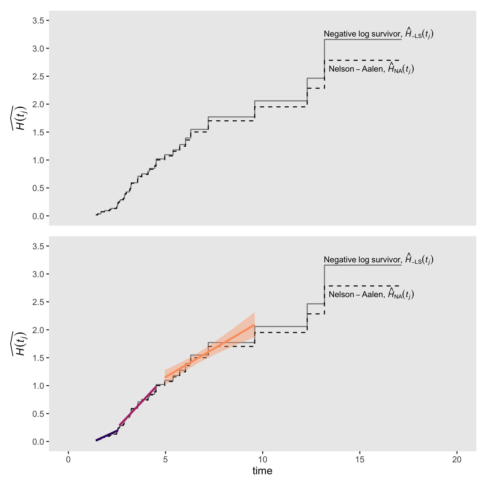
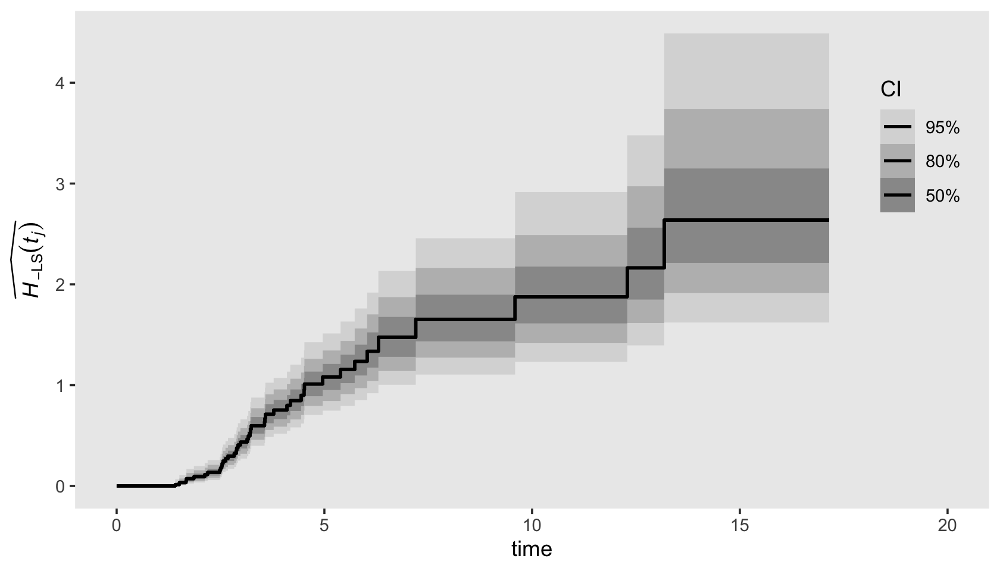

13 Describing Continuous-Time Event Occurrence Data
In this chapter, we present strategies for describing continuous-time event data. Although survivor and hazard functions continue to form the cornerstone of our work, the challenge in the time scale from discrete to continuous demands that we revise our fundamental definitions and modify estimation strategies….
In the [second half of the chapter], we offer solutions to the core conundrum embedded in contentious-time event data: our inability to estimate the hazard function well. This is a concern as it leads some researchers to conclude that they should not even try to ascertain the pattern of risk over time. (Singer & Willett, 2003, pp, 468–469, emphasis in the original)
13.1 A framework for characterizing the distribution of continuous-time event data
Variables measured with greater precision contain more information than those measured with less precision… Finer distinctions, as long as they can be made reliably, lead to more subtle interpretations and more powerful analyses.
Unfortunately, a switch from discrete- to continuous-time survival analysis is not as trivial as you might hope. In discrete time, the definition of the hazard function is intuitive, its values are easily estimated, and simple graphic displays can illuminate its behavior. In continuous time, although the survivor function is easily defined and estimated, the hazard function is not. As explained below, we must revise its definition and develop new methods for its estimation and exploration. (p. 469)
13.1.1 Salient features of continuous-time event occurrence data.
Because continuous time is infinitely divisible, the distribution of event times displays two highly salient properties:
- The probability of observing any particular event time is infinitesimally small. In continuous time, the probability that an event will occur at any specific instant approaches 0. The probability may nor reach 0, but as time’s divisions become finer and finer, it becomes smaller and smaller.
- The probability that two or more individuals will share the same event time is also infinitesimally small. If the probability of event occurrence at each instant is infinitesimally small, the probability of cooccurrence (a tie) must be smaller still. (p. 470, emphasis in the original)
Load the horn honking data from Diekmann, Jungbauer-Gans, Krassing, and Lorenz (1996).
library(tidyverse)
honking <-
read_csv("data/honking.csv") %>%
# make all names lower case
rename_all(str_to_lower) %>%
mutate(censor_1 = abs(censor - 1))
glimpse(honking)## Rows: 57
## Columns: 4
## $ id <dbl> 1, 2, 3, 4, 5, 6, 7, 8, 9, 10, 11, 12, 13, 14, 15, 16, 17, 18, 19, 20, 21, 22, 23…
## $ seconds <dbl> 2.88, 4.63, 2.36, 2.68, 2.50, 4.30, 1.86, 4.01, 1.41, 9.59, 4.44, 3.14, 2.83, 12.…
## $ censor <dbl> 0, 1, 1, 0, 0, 1, 0, 1, 0, 0, 0, 0, 0, 0, 0, 1, 0, 0, 0, 0, 1, 0, 0, 0, 0, 0, 0, …
## $ censor_1 <dbl> 1, 0, 0, 1, 1, 0, 1, 0, 1, 1, 1, 1, 1, 1, 1, 0, 1, 1, 1, 1, 0, 1, 1, 1, 1, 1, 1, …Here’s a quick way to arrange the seconds values and censor status of each case in a similar way to how they appear in Table 13.1.
honking %>%
arrange(seconds) %>%
transmute(seconds = ifelse(censor == 0, seconds, str_c(seconds, "*")))## # A tibble: 57 x 1
## seconds
## <chr>
## 1 1.41
## 2 1.41*
## 3 1.51
## 4 1.67
## 5 1.68
## 6 1.86
## 7 2.12
## 8 2.19
## 9 2.36*
## 10 2.48
## # … with 47 more rowsFor kicks, here’s a tile-plot version of Table 13.1.
honking %>%
arrange(seconds) %>%
# `formatC()` allows us to retain the trailing zeros when converting the numbers to text
mutate(text = formatC(seconds, digits = 2, format = "f")) %>%
mutate(time = ifelse(censor == 0, text, str_c(text, "*")),
row = c(rep(1:6, times = 9), 1:3),
col = rep(1:10, times = c(rep(6, times = 9), 3))) %>%
ggplot(aes(x = col, y = row)) +
geom_tile(aes(fill = seconds)) +
geom_text(aes(label = time, color = seconds < 10)) +
scale_fill_viridis_c(option = "B", limits = c(0, NA)) +
scale_color_manual(values = c("black", "white")) +
scale_y_reverse() +
labs(subtitle = "Table 13.1: Known and censored (*) event times for 57 motorists blocked by another\nautomobile (reaction times are recorded to the nearest hundredth of a second)") +
theme_void() +
theme(legend.position = "none")13.1.2 The survivor function.
“In continuous time, the survival probability for individual \(i\) at time \(t_j\) is the probability that his or her event time, \(T_i\) will exceed \(t_j\)” (p. 472). This follows the equation
\[S(t_{ij}) = \operatorname{Pr} [T_i > t_j].\]
Heads up: When Singer and Willett “do not distinguish individuals on the basis of predictors, [they] remove the subscript \(i\), letting \(S(t_j)\) represent the survivor function for a randomly selected member of the population” (p. 472).
13.1.3 The hazard function.
The hazard function assesses the risk–at a particular moment–that an individual who has not yet done so will experience the target event. In discrete time, the moments are time periods, which allows us to express hazard as a conditional probability. In continuous time, the moments are the infinite numbers of infinitesimally small instants of time that exist within any finite time period, a change that requires us to alter our definition. (pp. 472–473, emphasis in the original)
Singer and Willett the went on to demonstrate the notion of “infinitesimally small instants of time” by dividing a year into days, hours, minutes, and seconds. Here’s how we might use R to practice dividing up a year into smaller and smaller units.
year <- 1
days <- 365
hours <- 24
minutes <- 60
seconds <- 60
year * days## [1] 365year * days * hours## [1] 8760year * days * hours * minutes## [1] 525600year * days * hours * minutes * seconds## [1] 31536000Building, we define the continuous-time hazard function as
\[h(t_{ij}) = \text{limit as } \Delta t \rightarrow 0 \left \{ \frac{\text{Pr}[T_i \text{ is in the interval } (t_j, t_j + \Delta t) | T_i \geq t_j]}{\Delta t} \right \},\]
where \([t_j, t_j + \Delta t)\) is the \(j\)th time interval and “the opening phrase ‘\(\text{limit as } \Delta t \rightarrow 0\)’ indicates that we evaluate the conditional probability in brackets as the interval width modes closer and closer to 0” (p. 474).
Because the definitions of hazard differ in continuous and discrete time, their interpretations differ as well. Most important, continuous-time hazard is not a probability. Instead, it is a rate, assessing the conditional probability of event occurrence per unit of time. No matter how tempted you might be to use the nomenclature of probability to describe rates in continuous time, please resist the urge. Rates and probabilities are not the same, and so the interpretive language is not interchangeable. (p. 474, emphasis in the original)
Closing out this section, we read:
An important difference between continuous-time hazard rates and discrete-time hazard probabilities is that rates are not bounded from above. Although neither can be negative, rates can easily exceed 1.0…. The possibility that continuous-time hazard rate can exceed 1 has serious consequences because it requires that we revise the statistical models that incorporate the effects of predictors. We cannot posit a model in terms of logit hazard (as in discrete time) because that transformation is defined only for values of hazard between 0 and 1. As a result, when we specify continuous-time hazard models in chapter 14, our specification will focus on the logarithm of hazard, a transformation that is defines for all values of hazard greater than 0. (p. 475, emphasis in the original)
13.2 Grouped methods for estimating continuous-time survivor and hazard functions
In principle, in continuous time, we would like to estimate a value for the survivor and hazard functions at every possible instant when an event could occur. In practice, we can do so only if we are willing to adopt constraining parametric assumptions about the distribution of event times. To support this approach, statisticians have identified dozens of different distributions–Weibull, Gompertz, gamma, and log-logistic, to name a few–that event times might follow, and in some fields—industrial product testing, for example–parametric estimation is the dominant mode of analysis (see, e.g., Lawless, 1982).
In many other fields, including most of the social, behavioral, and medical sciences, nonparametric methods are more popular. The fundamental advantage of nonparametric methods is that we need not make constraining assumptions about the distribution of event times. This flexibility is important because: (1) few researchers have a sound basis for preferring one distribution over another; and (2) adopting an incorrect assumption can lead to erroneous conclusions. With a nonparametric approach, you essentially trade the possibility of a minor increase in efficiency if a particular assumption holds for the guarantee of doing nearly as well for most data sets, regardless of its tenability.
For decades, in a kind of mathematic irony, statisticians obtained nonparametric estimates of the continuous-time survivor and hazard functions by grouping event times into a small number of intervals, constructing a life table, and applying the discrete-time strategies of chapter 10 (with some minor revisions noted below). In this section we describe two of the most popular of these grouped strategies: the discrete-time method (section 13.2.1) and the actuarial method (section 13.2.2). (pp. 475–476, emphasis in the original)
As we’ll see, brms supports parametric and nonparametric continuous-time survival models. In the sections and chapters to come, we will make extensive use of the Cox model, which is nonparametric. However, if you look through the Time-to-event models section of Bürkner’s (2021c) vignette, Parameterization of response distributions in brms, you’ll see brms supports survival models with the exponential, inverse-Gaussian, gamma, log-normal, and Weibull likelihoods.
13.2.1 Constructing a grouped life table.
Grouped estimation strategies begin with a life table that partitions continuous time into a manageable number of contiguous intervals. When choosing a partition, you should seek one that is: (1) substantively meaningful; (2) coarse enough to yield stable estimates; and (3) fine enough to reveal discernible patterns. (p. 476)
For the first step in making the life table of Table 13.2, we’ll make variables that partition the seconds column of the honking data into lower and upper bounds.
honking <-
honking %>%
mutate(lb = case_when(
seconds < 2 ~ 1,
seconds < 3 ~ 2,
seconds < 4 ~ 3,
seconds < 5 ~ 4,
seconds < 6 ~ 5,
seconds < 7 ~ 6,
seconds < 8 ~ 7,
seconds >= 8 ~ 8
)) %>%
mutate(ub = if_else(lb == 8, 18, lb + 1)) %>%
mutate(time_interval = str_c("[", lb, ", ", ub, ")"))
honking %>% head()## # A tibble: 6 x 7
## id seconds censor censor_1 lb ub time_interval
## <dbl> <dbl> <dbl> <dbl> <dbl> <dbl> <chr>
## 1 1 2.88 0 1 2 3 [2, 3)
## 2 2 4.63 1 0 4 5 [4, 5)
## 3 3 2.36 1 0 2 3 [2, 3)
## 4 4 2.68 0 1 2 3 [2, 3)
## 5 5 2.5 0 1 2 3 [2, 3)
## 6 6 4.3 1 0 4 5 [4, 5)Now we’ll transform the data into a life-table format, which we’ll save as honking_aggregated.
honking_aggregated <-
honking %>%
mutate(event = ifelse(censor == 0, "n_events", "n_censored")) %>%
count(lb, event) %>%
pivot_wider(names_from = event,
values_from = n) %>%
mutate(ub = if_else(lb == 8, 18, lb + 1)) %>%
mutate(time_interval = str_c("[", lb, ", ", ub, ")")) %>%
mutate(n_censored = ifelse(is.na(n_censored), 0, n_censored)) %>%
mutate(total = n_censored + n_events) %>%
mutate(n_at_risk = sum(total) - cumsum(lag(total, default = 0))) %>%
select(lb, ub, time_interval, n_at_risk, n_events, n_censored) %>%
mutate(`p(t)` = n_events / n_at_risk)
honking_aggregated## # A tibble: 8 x 7
## lb ub time_interval n_at_risk n_events n_censored `p(t)`
## <dbl> <dbl> <chr> <dbl> <int> <dbl> <dbl>
## 1 1 2 [1, 2) 57 5 1 0.0877
## 2 2 3 [2, 3) 51 14 3 0.275
## 3 3 4 [3, 4) 34 9 2 0.265
## 4 4 5 [4, 5) 23 6 4 0.261
## 5 5 6 [5, 6) 13 2 2 0.154
## 6 6 7 [6, 7) 9 2 2 0.222
## 7 7 8 [7, 8) 5 1 0 0.2
## 8 8 18 [8, 18) 4 3 1 0.7513.2.2 The discrete-time method.
Here we simply apply the discrete-time hazard model to our discretized continuous-time data. Before we fit the model, we’ll define a new term, \(\hat p(t_j)\). Recall back to Section 10.2 where we defined the hazard function \(\hat h(t_{j})\) as
\[\hat h(t_{j}) = \frac{n \text{ events}_j}{n \text{ at risk}_j}.\]
Now we’re working with continuous-time data (even if they’re momentarily discretized), we focus instead on \(\hat p(t_{j})\). In words, \(\hat p(t_{j})\) is the conditional probability that a member of the risk set at the beginning of the interval \(j\) will experience the target event during that interval. In discrete time we labeled this quantity “hazard,” but now we use the term “conditional probability” to distinguish it from a continuous time hazard rate. Our conditional probability follows the formula
\[\hat p(t_{j}) = \frac{n \text{ events}_j}{n \text{ at risk}_j},\]
where \(n \text{ events}_j\) is the number of individuals who experienced the event in the \(j^{th}\) period and \(n \text{ at risk}_j\) is the number of those at risk at the beginning of the interval \(j\).
Time to fire up brms.
library(brms)
library(tidybayes)For our first model, we will use the binomial likelihood with the aggregated version of the honking data, honking_aggregated. The main time variable in those data is time_interval, the lower and upper bounds for which are identified in the lb and ub columns, respectively. In anticipation of the upcoming plots, we’ll use the ub variable for time. But to make fitting the model easier with the brm() function, we’ll first save a factor version of the variable.
honking_aggregated <-
honking_aggregated %>%
mutate(ub_f = factor(ub))In the last chapter, we used the normal(0, 4) prior, which was permissive in the log-odds metric. Here we’ll be more conservative and use normal(0, 1.5), which is weakly-regularizing on the log-odds metric, but flat in the probability metric. A plot might help show this.
set.seed(13)
tibble(`log odds` = rnorm(1e6, mean = 0, sd = 1.5)) %>%
mutate(probability = inv_logit_scaled(`log odds`)) %>%
pivot_longer(everything()) %>%
ggplot(aes(x = value, y = 0)) +
stat_histinterval(normalize = "panels") +
scale_y_continuous(NULL, breaks = NULL) +
xlab("prior predictive distribution") +
theme(panel.grid = element_blank()) +
facet_wrap(~ name, scales = "free")
Otherwise, this model is just like any of the other unconditional discrete-time models we’ve fit with brm().
fit13.1 <-
brm(data = honking_aggregated,
family = binomial,
n_events | trials(n_at_risk) ~ 0 + ub_f,
prior(normal(0, 1.5), class = b),
chains = 4, cores = 1, iter = 2000, warmup = 1000,
seed = 13,
file = "fits/fit13.01")Check the parameter summary.
print(fit13.1)## Family: binomial
## Links: mu = logit
## Formula: n_events | trials(n_at_risk) ~ 0 + ub_f
## Data: honking_aggregated (Number of observations: 8)
## Samples: 4 chains, each with iter = 2000; warmup = 1000; thin = 1;
## total post-warmup samples = 4000
##
## Population-Level Effects:
## Estimate Est.Error l-95% CI u-95% CI Rhat Bulk_ESS Tail_ESS
## ub_f2 -2.22 0.43 -3.15 -1.43 1.00 6804 2874
## ub_f3 -0.95 0.31 -1.55 -0.37 1.00 7543 3101
## ub_f4 -0.98 0.37 -1.71 -0.29 1.00 6630 3183
## ub_f5 -0.98 0.46 -1.93 -0.10 1.00 7123 2773
## ub_f6 -1.46 0.66 -2.85 -0.25 1.00 6758 2695
## ub_f7 -1.06 0.72 -2.61 0.33 1.00 7165 2471
## ub_f8 -1.04 0.88 -2.84 0.61 1.00 7283 2954
## ub_f18 0.79 0.91 -0.90 2.66 1.00 7227 2779
##
## Samples were drawn using sampling(NUTS). For each parameter, Bulk_ESS
## and Tail_ESS are effective sample size measures, and Rhat is the potential
## scale reduction factor on split chains (at convergence, Rhat = 1).As will become apparent in a bit, our normal(0, 1.5) prior was not inconsequential. Our aggregated data were composed of the event/censoring information of 57 cases, spread across 8 time periods. This left little information in the likelihood, particularly for the later time periods. As a consequence, the prior left clear marks in the posterior.
As with the discrete-time model, we can formally define the survivor function for the continuous-time model as
\[\hat S(t_j) = \big(1 - \hat p(t_1)\big) \big(1 - \hat p(t_2)\big)... \big(1 - \hat p(t_j)\big).\]
It’ll take a little wrangling effort to transform the output from posterior_samples(fit13.1) into a useful form for plotting and summarizing \(\hat S(t_j)\). We’ll save it as s.
s <-
posterior_samples(fit13.1) %>%
select(starts_with("b_")) %>%
mutate_all(inv_logit_scaled) %>%
mutate(b_ub_f0 = 0) %>%
select(b_ub_f0, everything()) %>%
set_names(c(1:8, 18)) %>%
mutate(iter = 1:n()) %>%
pivot_longer(-iter,
names_to = "time",
values_to = "p") %>%
mutate(time = time %>% as.integer()) %>%
group_by(iter) %>%
mutate(survivor = cumprod(1 - p)) %>%
ungroup()Now we can make the first 6 columns of Table 13.2 by combining a subset of the honking_aggregated data with a summary of our s.
bind_cols(
# select the first 5 columns for Table 13.2
honking_aggregated %>%
select(time_interval:`p(t)`),
# add the 6th column
s %>%
filter(time > 1) %>%
group_by(time) %>%
summarise(median = median(survivor),
sd = sd(survivor)) %>%
mutate_if(is.double, round, digits = 4) %>%
transmute(`S(t)` = str_c(median, " (", sd, ")"))
)## # A tibble: 8 x 6
## time_interval n_at_risk n_events n_censored `p(t)` `S(t)`
## <chr> <dbl> <int> <dbl> <dbl> <chr>
## 1 [1, 2) 57 5 1 0.0877 0.8999 (0.0388)
## 2 [2, 3) 51 14 3 0.275 0.6437 (0.0615)
## 3 [3, 4) 34 9 2 0.265 0.4633 (0.066)
## 4 [4, 5) 23 6 4 0.261 0.3322 (0.0626)
## 5 [5, 6) 13 2 2 0.154 0.2617 (0.0601)
## 6 [6, 7) 9 2 2 0.222 0.1875 (0.0549)
## 7 [7, 8) 5 1 0 0.2 0.1316 (0.0503)
## 8 [8, 18) 4 3 1 0.75 0.039 (0.0299)You’ll note that our posterior summary values in S(t) differ a little from those in the text. Remember, the likelihood was weak and we used a regularizing prior. If we had more cases spread across fewer discretized time periods, the likelihood would have done a better job updating the prior.
Now let’s take a look at the posterior of our survivor function, \(\hat S(t_j)\), in our version of the upper left panel of Figure 13.1.
s %>%
ggplot(aes(x = time, y = survivor)) +
geom_hline(yintercept = .5, color = "white") +
stat_lineribbon(alpha = 1/2) +
# add the ML-based survival estimates
geom_line(data = honking_aggregated %>% mutate(s = cumprod(1 - `p(t)`)),
aes(x = ub, y = s),
color = "red") +
scale_fill_grey("CI level", start = .7, end = .4) +
scale_x_continuous("seconds after light turns green", limits = c(0, 20)) +
ylab(expression(widehat(italic(S(t[j]))))) +
coord_cartesian(ylim = c(0, 1)) +
theme(panel.grid = element_blank())
For a little context, we superimposed the sample (ML) estimates of the survivor function in red. Based on the posterior median, our median lifetime appears to be between the time intervals of \([2, 3)\) and \([3, 4)\). Sticking with those medians, here’s the exact number using Miller’s (1981) interpolation approach from Section 10.2.2.
s_medians <-
s %>%
mutate(lb = time - 1,
ub = time) %>%
mutate(time_interval = str_c("[", lb, ", ", ub, ")")) %>%
filter(ub %in% c(3, 4)) %>%
group_by(time_interval) %>%
summarise(median = median(survivor)) %>%
pull(median)
3 + (s_medians[1] - .5) / (s_medians[1] - s_medians[2]) * (4 - 3)## [1] 3.796706Here’s how we might convert the output of posterior_samples(fit13.1) into a useful format for our hazard function.
h <-
posterior_samples(fit13.1) %>%
select(starts_with("b_")) %>%
mutate_all(inv_logit_scaled) %>%
set_names(c(2:8, 18)) %>%
mutate(iter = 1:n()) %>%
pivot_longer(-iter,
names_to = "time",
values_to = "p") %>%
mutate(time = time %>% as.integer())
h## # A tibble: 32,000 x 3
## iter time p
## <int> <int> <dbl>
## 1 1 2 0.0909
## 2 1 3 0.317
## 3 1 4 0.161
## 4 1 5 0.289
## 5 1 6 0.118
## 6 1 7 0.142
## 7 1 8 0.393
## 8 1 18 0.329
## 9 2 2 0.121
## 10 2 3 0.267
## # … with 31,990 more rowsFor continuous-time data, hazard is a rate, which is
the limit of the conditional probability of event occurrence in a (vanishingly small) interval divided by the interval’s width. A logical estimator is thus the ratio of the conditional probability of event occurrence in an interval to the interval’s width. (p. 479)
Thus, our new definition of hazard is
\[\hat h(t_j) = \frac{\hat p(t_j)}{\text{width}_j},\]
where \(\text{width}_j\) denotes the width of the \(j\)th interval. The widths of most of our intervals were 1 (seconds). The final interval, \([8, 18)\), had a width of ten. Once we add that information to the h data, we can use the formula above to convert \(\hat p(t_j)\) to \(\hat h(t_j)\).
h <-
h %>%
mutate(width = if_else(time <= 8, 1, 10)) %>%
mutate(hazard = p / width)Now we can make the first 7 columns of Table 13.2 by adding an cleaned-up version of our h object to what we had before.
bind_cols(
# select the first 5 columns for Table 13.2
honking_aggregated %>%
select(time_interval:`p(t)`),
# add the 6th column
s %>%
filter(time > 1) %>%
group_by(time) %>%
summarise(median = median(survivor),
sd = sd(survivor)) %>%
mutate_if(is.double, round, digits = 4) %>%
transmute(`S(t)` = str_c(median, " (", sd, ")")),
# add the 7th column
h %>%
group_by(time) %>%
summarise(median = median(hazard),
sd = sd(hazard)) %>%
mutate_if(is.double, round, digits = 4) %>%
transmute(`h(t)` = str_c(median, " (", sd, ")"))
)## # A tibble: 8 x 7
## time_interval n_at_risk n_events n_censored `p(t)` `S(t)` `h(t)`
## <chr> <dbl> <int> <dbl> <dbl> <chr> <chr>
## 1 [1, 2) 57 5 1 0.0877 0.8999 (0.0388) 0.1001 (0.0388)
## 2 [2, 3) 51 14 3 0.275 0.6437 (0.0615) 0.2797 (0.061)
## 3 [3, 4) 34 9 2 0.265 0.4633 (0.066) 0.274 (0.0721)
## 4 [4, 5) 23 6 4 0.261 0.3322 (0.0626) 0.2737 (0.0891)
## 5 [5, 6) 13 2 2 0.154 0.2617 (0.0601) 0.1922 (0.0991)
## 6 [6, 7) 9 2 2 0.222 0.1875 (0.0549) 0.2616 (0.1304)
## 7 [7, 8) 5 1 0 0.2 0.1316 (0.0503) 0.2706 (0.1587)
## 8 [8, 18) 4 3 1 0.75 0.039 (0.0299) 0.068 (0.0175)Perhaps even more so than with our estimates for the survivor function, our hazard estimates show the influence of our prior on the posterior. For example, note how our posterior standard deviations tend to be a bit smaller than the standard errors reported in the text. To my mind, plotting the marginal posteriors for the intervals of our hazard function really helps hit this home.
h %>%
mutate(time = factor(time)) %>%
ggplot(aes(x = hazard, y = time)) +
geom_vline(xintercept = .5, color = "white") +
stat_halfeye(.width = c(.5, .95), normalize = "xy") +
xlim(0, 1) +
theme(panel.grid = element_blank())
As wide and sloppy as those distributions look, they’re more precise than the estimates returned by Maximum Likelihood (ML). To finish this section out with the lower left panel of Figure 13.1, here’s what our hazard function looks like.
h %>%
ggplot(aes(x = time, y = hazard)) +
stat_lineribbon(alpha = 1/2) +
scale_fill_grey("CI level", start = .7, end = .4) +
scale_x_continuous("seconds after light turns green", limits = c(0, 20)) +
ylab(expression(widehat(italic(h(t[j]))))) +
coord_cartesian(ylim = c(0, .35)) +
theme(panel.grid = element_blank())
13.2.3 The actuarial method.
I’m not going to dive into a full explanation of the actuarial method. For that, read the book. However, the actuarial method presents a challenge for our brms paradigm. To appreciate the challenge, we’ll need a couple block quotes:
For the survivor function, we ask: What does it mean to be “at risk of surviving” past the end of an interval? Because a censored individual is no longer “at risk of surviving” once censoring occurs, we redefine each interval’s risk set to account for the censoring we assume to occur equally throughout. This implies that half the censored individuals would no longer be at risk half-way through, so we redefine the number of individuals “at risk of surviving past interval \(j\)” to be:
\[n' \; at \; risk_j = n \; at \; risk_j - \frac{n \; censored_j}{2}.\]
The actuarial estimate of the survivor function is obtained by substituting \(n' \; at \; risk_j\) for \(n \; at \; risk_j\) in the discrete-time formulas just presented in section 13.2.2 (equations 13.3 and 13.4). (pp. 480–481, emphasis in the original)
Further:
To estimate the hazard function using the actuarial approach, we again redefine what it means to be “at risk.” Now, however, we ask about the “risk of event occurrence” during the interval, not the “risk of survival” past the interval. This change of definition suggests that each interval’s risk set should be diminished not just by censoring but also by event occurrence, because either eliminates the possibility of subsequent event occurrence. Because categorization continues to prevent us from knowing precisely when people leave the risk set, we assume that exits are scattered at random throughout the interval. This implies that half these individuals are no longer at risk of event occurrence halfway through, so we redefine the number of individuals “at risk of event occurrence” in interval \(j\) to be:
\[n'' \; at \; risk_j = n \; at \; risk_j - \frac{n \; censored_j}{2} - \frac{n \; events_j}{2}.\]
The actuarial estimator of the continuous-time hazard function is then obtained by substituting \(n'' \; at \; risk_j\) for \(n \; at \; risk_j\) in discrete-time formulas of section 13.2.2 (equations 13.3 and 13.5). (pp. 481–481, emphasis in the original)
Here’s how we might implement the equations for \(n' \; at \; risk_j\) and \(n'' \; at \; risk_j\) in our honking_aggregated data.
honking_aggregated <-
honking_aggregated %>%
mutate(n_p_at_risk_a = n_at_risk - (n_censored / 2),
n_pp_at_risk_a = n_at_risk - (n_censored / 2) - (n_events / 2))
honking_aggregated## # A tibble: 8 x 10
## lb ub time_interval n_at_risk n_events n_censored `p(t)` ub_f n_p_at_risk_a n_pp_at_risk_a
## <dbl> <dbl> <chr> <dbl> <int> <dbl> <dbl> <fct> <dbl> <dbl>
## 1 1 2 [1, 2) 57 5 1 0.0877 2 56.5 54
## 2 2 3 [2, 3) 51 14 3 0.275 3 49.5 42.5
## 3 3 4 [3, 4) 34 9 2 0.265 4 33 28.5
## 4 4 5 [4, 5) 23 6 4 0.261 5 21 18
## 5 5 6 [5, 6) 13 2 2 0.154 6 12 11
## 6 6 7 [6, 7) 9 2 2 0.222 7 8 7
## 7 7 8 [7, 8) 5 1 0 0.2 8 5 4.5
## 8 8 18 [8, 18) 4 3 1 0.75 18 3.5 2The essence of our problem is we’ve been using the binomial likelihood to fit discrete-time hazard functions with brms. In this paradigm, we feed in data composed of the number of successes and the corresponding number of trials to compute probability \(p\) of a success within a given trial. Although \(p\) is a continuous value ranging from 0 to 1, the binomial likelihood takes the numbers of successes and trials to be non-negative integers. If you try to feed our actuarial \(n'' \; at \; risk_j\) variable, n_at_risk_pp into the formula argument for brms::brm() (e.g., n_events | trials(n_at_risk_pp) ~ 0 + ub_f), brms will return the warning:
Error: Number of trials must be positive integers.
We can, however, follow along and compute the ML estimates by hand.
honking_aggregated <-
honking_aggregated %>%
mutate(`S(t)_a` = cumprod(1 - n_events / n_p_at_risk_a),
`p(t)_a` = n_events / n_pp_at_risk_a,
width = if_else(lb == 8, 10, 1)) %>%
mutate(`h(t)_a` = `p(t)_a` / width)
honking_aggregated## # A tibble: 8 x 14
## lb ub time_interval n_at_risk n_events n_censored `p(t)` ub_f n_p_at_risk_a n_pp_at_risk_a
## <dbl> <dbl> <chr> <dbl> <int> <dbl> <dbl> <fct> <dbl> <dbl>
## 1 1 2 [1, 2) 57 5 1 0.0877 2 56.5 54
## 2 2 3 [2, 3) 51 14 3 0.275 3 49.5 42.5
## 3 3 4 [3, 4) 34 9 2 0.265 4 33 28.5
## 4 4 5 [4, 5) 23 6 4 0.261 5 21 18
## 5 5 6 [5, 6) 13 2 2 0.154 6 12 11
## 6 6 7 [6, 7) 9 2 2 0.222 7 8 7
## 7 7 8 [7, 8) 5 1 0 0.2 8 5 4.5
## 8 8 18 [8, 18) 4 3 1 0.75 18 3.5 2
## # … with 4 more variables: S(t)_a <dbl>, p(t)_a <dbl>, width <dbl>, h(t)_a <dbl>Before we make our version of the right-hand side of Figure 13.1, we’ll need to augment the data a little. Then geom_step() will do most of the magic.
p1 <-
# add `S(t)_a` values for `lb = c(0, 18)`
honking_aggregated %>%
select(lb, `S(t)_a`) %>%
bind_rows(tibble(lb = c(0, 18),
`S(t)_a` = c(1, honking_aggregated$`S(t)_a`[8]))) %>%
# reorder
arrange(lb) %>%
# plot!
ggplot(aes(x = lb, y = `S(t)_a`)) +
geom_step() +
scale_x_continuous(NULL, breaks = NULL) +
scale_y_continuous(expression(widehat(italic(S(t[j])))), limits = c(0, 1))
p2 <-
# add `h(t)_a` values for `lb = 18`
honking_aggregated %>%
select(lb, `h(t)_a`) %>%
bind_rows(tibble(lb = 18,
`h(t)_a` = honking_aggregated$`h(t)_a`[8])) %>%
arrange(lb) %>%
ggplot(aes(x = lb, y = `h(t)_a`)) +
geom_step() +
scale_x_continuous("seconds after light turns green", limits = c(0, 20)) +
scale_y_continuous(expression(widehat(italic(h(t[j])))), limits = c(0, .35))Combine the subplots and make our version of the right-hand side of Figure 13.1.
library(patchwork)
(p1 / p2) &
theme(panel.grid = element_blank())
I’m not going to bother with computing the ML standard errors for the actuarial survivor and hazard estimates. You can reference page 482 in the text for more on those.
13.3 The Kaplan-Meier method of estimating the continuous-time survivor function
A fundamental problem with grouped estimation methods is that they artificially categorize what is now, by definition, a continuous variable…. Shouldn’t it be possible to use the observed data–the actual event times–to describe the distribution of event occurrences? This compelling idea underlies the Kaplan-Meier method, named for the statisticians who demonstrated (in 1958) that the intuitive approach–also known as the product-limit method–has maximum likelihood properties as well. Below, we explain how this approach works and why it is preferable.
The Kaplan-Meier method is a simple extension of the discrete-time method with a fundamental change: instead of rounding event times to construct the intervals, capitalize on the raw event times and construct intervals so that each contains just one observed event time (as shown in table 13.3). Each Kaplan-Meier interval begins at one observed event time and ends just before the next. (p. 483, emphasis in the original)
As discussed in the prose in the middle of page 483, here are the first three event times.
honking %>%
filter(censor == 0) %>%
top_n(-3, seconds)## # A tibble: 3 x 7
## id seconds censor censor_1 lb ub time_interval
## <dbl> <dbl> <dbl> <dbl> <dbl> <dbl> <chr>
## 1 9 1.41 0 1 1 2 [1, 2)
## 2 40 1.51 0 1 1 2 [1, 2)
## 3 50 1.67 0 1 1 2 [1, 2)The Kaplan-Meier estimate of the survivor function is obtained by applying the discrete-time estimator of section 13.2.2 to the data of these intervals. [Most] statistical packages include a routine for computing and plotting the estimates. Numerically, the process is simple: first compute the conditional probability of event occurrence (column 7) and then successively multiply the complements of these probabilities together to obtain the Kaplan-Meier estimate of the survivor function (column 8). Because the Kaplan-Meier estimator of the survivor function is identical to the discrete-time estimator of chapter 10, its standard errors (column 9) are estimated using the same formula (pp. 483–485).
To walk this out, we’ll first use the frequentist survival package.
library(survival)Use the survival::survfit() function to fit the unconditional model with the Kaplan-Meier estimator.
fit13.2 <-
survfit(data = honking,
Surv(seconds, censor_1) ~ 1)The summary() returns a lot of output.
summary(fit13.2)## Call: survfit(formula = Surv(seconds, censor_1) ~ 1, data = honking)
##
## time n.risk n.event survival std.err lower 95% CI upper 95% CI
## 1.41 57 1 0.9825 0.0174 0.94896 1.000
## 1.51 55 1 0.9646 0.0246 0.91758 1.000
## 1.67 54 1 0.9467 0.0299 0.88985 1.000
## 1.68 53 1 0.9289 0.0343 0.86405 0.999
## 1.86 52 1 0.9110 0.0380 0.83950 0.989
## 2.12 51 1 0.8931 0.0412 0.81587 0.978
## 2.19 50 1 0.8753 0.0441 0.79296 0.966
## 2.48 48 1 0.8570 0.0468 0.77004 0.954
## 2.50 47 1 0.8388 0.0492 0.74765 0.941
## 2.53 46 1 0.8206 0.0514 0.72572 0.928
## 2.54 45 1 0.8023 0.0534 0.70418 0.914
## 2.56 44 1 0.7841 0.0552 0.68299 0.900
## 2.62 43 1 0.7659 0.0569 0.66212 0.886
## 2.68 42 1 0.7476 0.0584 0.64154 0.871
## 2.83 39 1 0.7285 0.0599 0.61996 0.856
## 2.88 38 1 0.7093 0.0614 0.59868 0.840
## 2.89 37 1 0.6901 0.0626 0.57769 0.824
## 2.92 36 1 0.6710 0.0637 0.55695 0.808
## 2.98 35 1 0.6518 0.0647 0.53648 0.792
## 3.14 33 1 0.6320 0.0657 0.51549 0.775
## 3.17 32 1 0.6123 0.0666 0.49477 0.758
## 3.21 31 1 0.5925 0.0673 0.47429 0.740
## 3.22 30 1 0.5728 0.0679 0.45405 0.723
## 3.24 29 1 0.5530 0.0684 0.43404 0.705
## 3.56 27 1 0.5325 0.0688 0.41338 0.686
## 3.57 26 1 0.5121 0.0692 0.39297 0.667
## 3.58 25 1 0.4916 0.0694 0.37282 0.648
## 3.78 24 1 0.4711 0.0694 0.35291 0.629
## 4.10 22 1 0.4497 0.0695 0.33217 0.609
## 4.18 21 1 0.4283 0.0694 0.31172 0.588
## 4.44 19 1 0.4057 0.0693 0.29028 0.567
## 4.51 18 1 0.3832 0.0690 0.26919 0.545
## 4.52 17 1 0.3606 0.0686 0.24847 0.523
## 4.96 14 1 0.3349 0.0683 0.22451 0.500
## 5.39 12 1 0.3070 0.0681 0.19875 0.474
## 5.73 11 1 0.2791 0.0674 0.17386 0.448
## 6.03 9 1 0.2481 0.0666 0.14651 0.420
## 6.30 7 1 0.2126 0.0659 0.11585 0.390
## 7.20 5 1 0.1701 0.0650 0.08044 0.360
## 9.59 4 1 0.1276 0.0611 0.04991 0.326
## 12.29 3 1 0.0851 0.0535 0.02478 0.292
## 13.18 2 1 0.0425 0.0403 0.00665 0.272Taking a cue from the good folks at IDRE, saving the summary results as an object will make it easy to subset and augment that information into our version of Table 13.1.
# save the summary as t
t <- summary(fit13.2)
# subset, augment, and save as honking_km
honking_km <-
tibble(seconds = t$time,
n_risk = t$n.risk,
n_events = t$n.event) %>%
mutate(`p(t)` = n_events / n_risk,
n_censored = n_risk - n_events - lead(n_risk, default = 0),
interval = 1:n(),
interval_f = factor(1:n(), levels = 0:n()),
start = seconds,
end = lead(seconds, default = Inf)) %>%
select(interval:interval_f, seconds, start:end, n_risk:n_events, n_censored, `p(t)`)
honking_km## # A tibble: 42 x 9
## interval interval_f seconds start end n_risk n_events n_censored `p(t)`
## <int> <fct> <dbl> <dbl> <dbl> <dbl> <dbl> <dbl> <dbl>
## 1 1 1 1.41 1.41 1.51 57 1 1 0.0175
## 2 2 2 1.51 1.51 1.67 55 1 0 0.0182
## 3 3 3 1.67 1.67 1.68 54 1 0 0.0185
## 4 4 4 1.68 1.68 1.86 53 1 0 0.0189
## 5 5 5 1.86 1.86 2.12 52 1 0 0.0192
## 6 6 6 2.12 2.12 2.19 51 1 0 0.0196
## 7 7 7 2.19 2.19 2.48 50 1 1 0.02
## 8 8 8 2.48 2.48 2.5 48 1 0 0.0208
## 9 9 9 2.5 2.5 2.53 47 1 0 0.0213
## 10 10 10 2.53 2.53 2.54 46 1 0 0.0217
## # … with 32 more rowsWe haven’t bothered adding the top interval == 0 row, but one could add that information with a little bind_rows() labor. Note how we slipped in a few extra columns (e.g., interval_f) because they’ll come in handy, later. We compute the Kaplan-Meier estimates for the survivor function by serially multiplying the compliments for the estimates of the conditional probability values, \(\hat p(t)\). As in other examples, that’s just a little cumprod() code.
honking_km <-
honking_km %>%
mutate(`S(t)` = cumprod(1 - `p(t)`))Instead of doing that by hand, we could have just subset the surv vector within t.
t$surv## [1] 0.98245614 0.96459330 0.94673046 0.92886762 0.91100478 0.89314195 0.87527911 0.85704413
## [9] 0.83880914 0.82057416 0.80233918 0.78410420 0.76586922 0.74763424 0.72846413 0.70929402
## [17] 0.69012391 0.67095380 0.65178369 0.63203267 0.61228165 0.59253063 0.57277961 0.55302859
## [25] 0.53254605 0.51206351 0.49158097 0.47109843 0.44968486 0.42827130 0.40573070 0.38319011
## [33] 0.36064951 0.33488883 0.30698143 0.27907403 0.24806580 0.21262783 0.17010227 0.12757670
## [41] 0.08505113 0.04252557Here we subset the standard errors for \(\hat S(t)\).
honking_km <-
honking_km %>%
mutate(`se[S(t)]` = t$std.err)
head(honking_km)## # A tibble: 6 x 11
## interval interval_f seconds start end n_risk n_events n_censored `p(t)` `S(t)` `se[S(t)]`
## <int> <fct> <dbl> <dbl> <dbl> <dbl> <dbl> <dbl> <dbl> <dbl> <dbl>
## 1 1 1 1.41 1.41 1.51 57 1 1 0.0175 0.982 0.0174
## 2 2 2 1.51 1.51 1.67 55 1 0 0.0182 0.965 0.0246
## 3 3 3 1.67 1.67 1.68 54 1 0 0.0185 0.947 0.0299
## 4 4 4 1.68 1.68 1.86 53 1 0 0.0189 0.929 0.0343
## 5 5 5 1.86 1.86 2.12 52 1 0 0.0192 0.911 0.0380
## 6 6 6 2.12 2.12 2.19 51 1 0 0.0196 0.893 0.0412We can plot the fitted \(\hat S(t)\) values with `geom_step() to make our version of the top half of Figure 13.2.
p1 <-
honking_km %>%
select(seconds, `S(t)`) %>%
bind_rows(tibble(seconds = 17.15,
`S(t)` = 0.04252557)) %>%
ggplot(aes(x = seconds, y = `S(t)`)) +
geom_step() +
scale_x_continuous(NULL, breaks = NULL, limits = c(0, 20))Now add the actuarial and discrete-time estimates to make our version of the lower panel of Figure 13.2.
arrow <-
tibble(x = c(5, 8.7, 2.7),
y = c(.8, .4, .23),
xend = c(2.6, 7, 3.9),
yend = c(.875, .25, .33))
text <-
tibble(x = c(5, 8.7, 2.7),
y = c(.77, .43, .2),
label = c("Kaplan Meier", "Discrete-time", "Actuarial"))
p2 <-
honking_km %>%
select(seconds, `S(t)`) %>%
bind_rows(tibble(seconds = 17.15,
`S(t)` = 0.04252557)) %>%
ggplot(aes(x = seconds, y = `S(t)`)) +
geom_step() +
geom_step(data = honking_aggregated,
aes(x = ub, y = `S(t)_a`),
linetype = 3, direction = "vh") +
geom_line(data = honking_aggregated %>% mutate(s = cumprod(1 - `p(t)`)),
aes(x = ub, y = s),
linetype = 2) +
geom_segment(data = arrow,
aes(x = x, xend = xend,
y = y, yend = yend),
size = 1/3, arrow = arrow(length = unit(0.15,"cm"), type = "closed")) +
geom_text(data = text,
aes(x = x, y = y, label = label)) +
scale_x_continuous("seconds after light turns green", limits = c(0, 20))Combine and plot.
(p1 / p2) &
scale_y_continuous(expression(widehat(italic(S(t[j])))), limits = c(0, 1)) &
theme(panel.grid = element_blank())Did you notice how in both subplots we used bind_rows() to add in an S(t) value for seconds = 17.15? In the text, we read:
As for actuarial estimates, we plot Kaplan-Meier estimates as a step function that associates the estimated probability with the entire interval. If the largest event time is censored, as it is here (17.15), we extend the step for the last estimate out to that largest censored value. (pp. 485–486)
Those bind_rows() lines are what extended “the step for the last estimate.” Since that last estimate for \(\hat S(t_j) = 0.04252557\), we set S(t) = 0.04252557 in the plot data.
We can get the median lifetime by executing print(fit13.2).
print(fit13.2)## Call: survfit(formula = Surv(seconds, censor_1) ~ 1, data = honking)
##
## n events median 0.95LCL 0.95UCL
## 57.00 42.00 3.58 3.17 4.96Like in the text, it’s 3.58.
Even though there is no Kaplan-Meier estimate for hazard, we can compute a Kaplan-Meier type hazard with the formula
\[\hat h_\text{KM} (t_j) = \frac{\hat p_\text{KM} (t_j)}{\text{width}_j}.\]
Here we compute both the \(\text{width}_j\) and \(\hat h_\text{KM} (t_j)\) values by hand.
honking_km <-
honking_km %>%
mutate(width = end - start) %>%
mutate(width = if_else(end == Inf, 17.15 - start, width)) %>% # this might be wrong
mutate(`h[km](t)` = `p(t)` / width)
honking_km## # A tibble: 42 x 13
## interval interval_f seconds start end n_risk n_events n_censored `p(t)` `S(t)` `se[S(t)]`
## <int> <fct> <dbl> <dbl> <dbl> <dbl> <dbl> <dbl> <dbl> <dbl> <dbl>
## 1 1 1 1.41 1.41 1.51 57 1 1 0.0175 0.982 0.0174
## 2 2 2 1.51 1.51 1.67 55 1 0 0.0182 0.965 0.0246
## 3 3 3 1.67 1.67 1.68 54 1 0 0.0185 0.947 0.0299
## 4 4 4 1.68 1.68 1.86 53 1 0 0.0189 0.929 0.0343
## 5 5 5 1.86 1.86 2.12 52 1 0 0.0192 0.911 0.0380
## 6 6 6 2.12 2.12 2.19 51 1 0 0.0196 0.893 0.0412
## 7 7 7 2.19 2.19 2.48 50 1 1 0.02 0.875 0.0441
## 8 8 8 2.48 2.48 2.5 48 1 0 0.0208 0.857 0.0468
## 9 9 9 2.5 2.5 2.53 47 1 0 0.0213 0.839 0.0492
## 10 10 10 2.53 2.53 2.54 46 1 0 0.0217 0.821 0.0514
## # … with 32 more rows, and 2 more variables: width <dbl>, h[km](t) <dbl>Singer and Willett remarked that “because the interval width varies widely (and is itself a function of the distribution of event times), the resulting estimates vary from one interval to the next. Their values are usually so erratic that pattern identification is nearly impossible” (p. 487). That sounds fun. Let’s explore them in a plot!
honking_km %>%
ggplot(aes(x = start, y = `h[km](t)`)) +
geom_path() +
geom_point() +
scale_x_continuous("seconds after light turns green", limits = c(0, 15)) +
scale_y_continuous(expression(hat(italic(h))[KM](italic(t[j])))) +
theme(panel.grid = element_blank())
Erratic, indeed.
13.3.1 Fitting a Bayesian Kaplan-Meier model
It’s worth repeating one of the quotes from earlier:
The Kaplan-Meier method is a simple extension of the discrete-time method with a fundamental change: instead of rounding event times to construct the intervals, capitalize on the raw event times and construct intervals so that each contains just one observed event time (as shown in table 13.3). Each Kaplan-Meier interval begins at one observed event time and ends just before the next. (p. 483, emphasis in the original)
Whether we’re working with one event occurrence at a time or binning them in intervals, the basic product of the model is a conditional probability. The binomial likelihood served us well when we binned the event occurrences into largish time intervals, and it will work just the same when we work them in serial fashion. The biggest obstacle is properly setting up the data. After some experimentation, the easiest way to format the data properly is to just use the summary results from survfit(data = honking, Surv(seconds, censor_1) ~ 1), which we saved as honking_km. Take another look.
glimpse(honking_km)## Rows: 42
## Columns: 13
## $ interval <int> 1, 2, 3, 4, 5, 6, 7, 8, 9, 10, 11, 12, 13, 14, 15, 16, 17, 18, 19, 20, 21, 22, …
## $ interval_f <fct> 1, 2, 3, 4, 5, 6, 7, 8, 9, 10, 11, 12, 13, 14, 15, 16, 17, 18, 19, 20, 21, 22, …
## $ seconds <dbl> 1.41, 1.51, 1.67, 1.68, 1.86, 2.12, 2.19, 2.48, 2.50, 2.53, 2.54, 2.56, 2.62, 2…
## $ start <dbl> 1.41, 1.51, 1.67, 1.68, 1.86, 2.12, 2.19, 2.48, 2.50, 2.53, 2.54, 2.56, 2.62, 2…
## $ end <dbl> 1.51, 1.67, 1.68, 1.86, 2.12, 2.19, 2.48, 2.50, 2.53, 2.54, 2.56, 2.62, 2.68, 2…
## $ n_risk <dbl> 57, 55, 54, 53, 52, 51, 50, 48, 47, 46, 45, 44, 43, 42, 39, 38, 37, 36, 35, 33,…
## $ n_events <dbl> 1, 1, 1, 1, 1, 1, 1, 1, 1, 1, 1, 1, 1, 1, 1, 1, 1, 1, 1, 1, 1, 1, 1, 1, 1, 1, 1…
## $ n_censored <dbl> 1, 0, 0, 0, 0, 0, 1, 0, 0, 0, 0, 0, 0, 2, 0, 0, 0, 0, 1, 0, 0, 0, 0, 1, 0, 0, 0…
## $ `p(t)` <dbl> 0.01754386, 0.01818182, 0.01851852, 0.01886792, 0.01923077, 0.01960784, 0.02000…
## $ `S(t)` <dbl> 0.9824561, 0.9645933, 0.9467305, 0.9288676, 0.9110048, 0.8931419, 0.8752791, 0.…
## $ `se[S(t)]` <dbl> 0.01738929, 0.02459209, 0.02992911, 0.03428307, 0.03799347, 0.04123439, 0.04410…
## $ width <dbl> 0.10, 0.16, 0.01, 0.18, 0.26, 0.07, 0.29, 0.02, 0.03, 0.01, 0.02, 0.06, 0.06, 0…
## $ `h[km](t)` <dbl> 0.17543860, 0.11363636, 1.85185185, 0.10482180, 0.07396450, 0.28011204, 0.06896…In the n_events column we have the number of cases that experienced the event in a given moment in continuous time. In the n_risk column we have the number of possible cases that could have experienced the event at that moment. In the interval_f column we’ve saved each moment as a factor, conveniently named \(1, 2,..., 42\). Thus we can fit a simple Bayesian Kaplan-Meier model with brms::brm() by specifying formula = n_events | trials(n_risk) ~ 0 + interval_f.
Consider the implications for our priors. Because we’re treating each instance in time as a factor, that means the number of cases experiencing the event in one of those factors will always be 1 or some other small number in the unusual case of a tie. But the number in the denominator, n_risk, will tend to be relatively large, which means the probabilities will tend to be small. The weakly regularizing prior approach centered on zero might not make sense in this context.
In earlier models, we used normal(0, 4) and normal(0, 1.5). Here’s what those look like when we convert them to the probability metric.
set.seed(13)
tibble(sd = c(4, 1.5)) %>%
mutate(prior = factor(str_c("normal(0, ", sd, ")"),
levels = str_c("normal(0, ", c(1, 1.5, 4), ")")),
log_odds = map(sd, rnorm, n = 1e5, mean = 0)) %>%
unnest(log_odds) %>%
mutate(p = inv_logit_scaled(log_odds)) %>%
ggplot(aes(x = p, y = prior)) +
stat_histinterval(.width = c(.5, .95), normalize = "xy") +
labs(x = expression(italic(p)),
y = "prior (log-odds scale)") +
coord_cartesian(ylim = c(1.5, 2.5)) +
theme(panel.grid = element_blank())
The normal(0, 4) prior does not reflect our expectation that the probabilities will tend to be small. Interestingly, normal(0, 4) pushes a lot of the prior mass to the edges. What we want is a prior that pushed the mass to the left. Here are some options:
crossing(mean = -4:-1,
sd = 1:4) %>%
mutate(log_odds = map2(mean, sd, rnorm, n = 1e5)) %>%
unnest(log_odds) %>%
mutate(p = inv_logit_scaled(log_odds),
mean = factor(str_c("mean = ", mean),
levels = str_c("mean = ", -4:-1)),
sd = str_c("sd = ", sd)) %>%
ggplot(aes(x = p, y = 0)) +
stat_histinterval(.width = c(.5, .95), normalize = "panels") +
scale_y_continuous(NULL, breaks = NULL) +
xlab(expression(italic(p))) +
theme(panel.grid = element_blank()) +
facet_grid(sd~mean)As you decrease the prior mean, the mass in the probability metric heads to zero. Increasing or shrinking the prior standard deviation accelerates or attenuates that leftward concentration. To my way of thinking, we want a prior that, while concentrating the mass toward zero, still offers a good spread toward the middle. Let’s try normal(-4, 3).
fit13.3 <-
brm(data = honking_km,
family = binomial,
n_events | trials(n_risk) ~ 0 + interval_f,
prior(normal(-4, 3), class = b),
chains = 4, cores = 1, iter = 2000, warmup = 1000,
seed = 13,
file = "~/Dropbox/Recoding Applied Longitudinal Data Analysis/fits/fit13.03")Check the summary.
print(fit13.3)## Family: binomial
## Links: mu = logit
## Formula: n_events | trials(n_risk) ~ 0 + interval_f
## Data: honking_km (Number of observations: 42)
## Samples: 4 chains, each with iter = 2000; warmup = 1000; thin = 1;
## total post-warmup samples = 4000
##
## Population-Level Effects:
## Estimate Est.Error l-95% CI u-95% CI Rhat Bulk_ESS Tail_ESS
## interval_f1 -4.40 1.07 -6.85 -2.73 1.00 4851 2250
## interval_f2 -4.41 1.10 -7.01 -2.67 1.00 5073 2356
## interval_f3 -4.39 1.08 -6.84 -2.68 1.00 4579 2227
## interval_f4 -4.36 1.14 -7.03 -2.62 1.00 5234 2319
## interval_f5 -4.34 1.10 -6.89 -2.64 1.00 5263 1951
## interval_f6 -4.32 1.06 -6.69 -2.58 1.00 5825 2498
## interval_f7 -4.33 1.10 -6.85 -2.57 1.00 4535 2355
## interval_f8 -4.27 1.07 -6.71 -2.60 1.00 5061 2615
## interval_f9 -4.23 1.07 -6.68 -2.50 1.00 6059 2750
## interval_f10 -4.24 1.10 -6.76 -2.51 1.00 5991 2424
## interval_f11 -4.20 1.07 -6.65 -2.48 1.00 5522 2809
## interval_f12 -4.20 1.12 -6.89 -2.45 1.00 6217 2517
## interval_f13 -4.13 1.05 -6.57 -2.44 1.00 5775 2378
## interval_f14 -4.21 1.16 -6.86 -2.37 1.00 4467 2049
## interval_f15 -4.08 1.12 -6.76 -2.34 1.00 5296 2476
## interval_f16 -4.07 1.11 -6.56 -2.33 1.00 4818 2174
## interval_f17 -4.04 1.11 -6.60 -2.27 1.00 5283 2442
## interval_f18 -4.01 1.07 -6.43 -2.29 1.00 5855 2882
## interval_f19 -4.02 1.11 -6.49 -2.23 1.00 4193 1994
## interval_f20 -3.93 1.12 -6.58 -2.17 1.00 4731 2114
## interval_f21 -3.86 1.09 -6.41 -2.16 1.00 5282 2270
## interval_f22 -3.85 1.08 -6.35 -2.15 1.00 5359 2372
## interval_f23 -3.83 1.10 -6.34 -2.08 1.00 5769 2478
## interval_f24 -3.84 1.17 -6.48 -1.98 1.00 4814 2123
## interval_f25 -3.73 1.11 -6.30 -1.98 1.00 5487 2548
## interval_f26 -3.74 1.16 -6.39 -1.88 1.00 5960 2687
## interval_f27 -3.71 1.16 -6.40 -1.85 1.00 4960 2439
## interval_f28 -3.67 1.14 -6.29 -1.87 1.00 5930 2472
## interval_f29 -3.58 1.17 -6.29 -1.73 1.00 4903 2065
## interval_f30 -3.54 1.16 -6.18 -1.66 1.00 5540 2453
## interval_f31 -3.45 1.18 -6.21 -1.56 1.00 5916 2484
## interval_f32 -3.39 1.19 -6.23 -1.51 1.00 5074 2436
## interval_f33 -3.31 1.18 -5.99 -1.42 1.00 5864 2438
## interval_f34 -3.13 1.19 -5.87 -1.24 1.00 5287 2505
## interval_f35 -3.02 1.23 -5.78 -1.04 1.00 5889 2654
## interval_f36 -2.94 1.20 -5.68 -1.00 1.00 4637 2248
## interval_f37 -2.73 1.22 -5.44 -0.73 1.00 5377 2237
## interval_f38 -2.49 1.26 -5.38 -0.43 1.00 5537 2254
## interval_f39 -2.12 1.29 -5.10 0.04 1.00 5342 2543
## interval_f40 -1.93 1.42 -5.03 0.45 1.00 5757 2406
## interval_f41 -1.56 1.47 -4.71 0.95 1.00 6246 2396
## interval_f42 -1.02 1.57 -4.34 1.87 1.00 7836 2634
##
## Samples were drawn using sampling(NUTS). For each parameter, Bulk_ESS
## and Tail_ESS are effective sample size measures, and Rhat is the potential
## scale reduction factor on split chains (at convergence, Rhat = 1).Our parameter diagnostics look excellent. It might be helpful to inspect their posteriors in a plot. Here we show them in both the log-odds and probability metrics.
post <-
posterior_samples(fit13.3) %>%
select(-lp__) %>%
set_names(1:42)
post %>%
pivot_longer(everything(),
names_to = "parameter",
values_to = "log_odds") %>%
mutate(parameter = factor(parameter, levels = 1:42),
probability = inv_logit_scaled(log_odds)) %>%
pivot_longer(probability:log_odds) %>%
ggplot(aes(x = value, y = parameter)) +
stat_halfeye(.width = .95, normalize = "xy", size = 1/2) +
labs(x = expression(hat(italic(p))[Bayes](italic(t[j]))),
y = expression(italic(j))) +
theme(panel.grid = element_blank()) +
facet_wrap(~name, scales = "free_x")Let’s wrangle our post object a little to put it in a more useful format.
post <-
post %>%
mutate_all(inv_logit_scaled) %>%
mutate(`0` = 0) %>%
mutate(iter = 1:n()) %>%
pivot_longer(-iter,
names_to = "interval",
values_to = "p") %>%
mutate(interval = interval %>% as.double()) %>%
arrange(interval) %>%
group_by(iter) %>%
mutate(survivor = cumprod(1 - p)) %>%
ungroup()
glimpse(post)## Rows: 172,000
## Columns: 4
## $ iter <int> 1, 2, 3, 4, 5, 6, 7, 8, 9, 10, 11, 12, 13, 14, 15, 16, 17, 18, 19, 20, 21, 22, 23…
## $ interval <dbl> 0, 0, 0, 0, 0, 0, 0, 0, 0, 0, 0, 0, 0, 0, 0, 0, 0, 0, 0, 0, 0, 0, 0, 0, 0, 0, 0, …
## $ p <dbl> 0, 0, 0, 0, 0, 0, 0, 0, 0, 0, 0, 0, 0, 0, 0, 0, 0, 0, 0, 0, 0, 0, 0, 0, 0, 0, 0, …
## $ survivor <dbl> 1, 1, 1, 1, 1, 1, 1, 1, 1, 1, 1, 1, 1, 1, 1, 1, 1, 1, 1, 1, 1, 1, 1, 1, 1, 1, 1, …We might want to compare our Bayesian \(\hat p(t_j)\) estimates with their Maximum Likelihood counterparts. Since the Bayesian marginal posteriors are rather asymmetrical, we’ll summarize \(\hat p_\text{Bayes} (t_j)\) with means, medians, and modes.
post %>%
mutate(interval = factor(interval, levels = 0:42)) %>%
group_by(interval) %>%
summarise(mean = mean(survivor),
median = median(survivor),
mode = Mode(survivor)) %>%
pivot_longer(-interval,
names_to = "posterior estimate") %>%
ggplot(aes(x = interval, y = value)) +
geom_point(aes(color = `posterior estimate`),
size = 3, shape = 1) +
geom_point(data = honking_km %>%
mutate(interval = factor(interval, levels = 0:42)),
aes(y = `S(t)`)) +
scale_color_viridis_d(option = "D", begin = .1, end = .8) +
ylab(expression(hat(italic(p))(italic(t[j])))) +
theme(legend.background = element_blank(),
legend.key = element_rect(fill = "grey92"),
legend.position = c(.85, .8),
panel.grid = element_blank())
The black dots were the ML estimates and the colored circles were the Bayesian counterparts. Overall, it looks like they matched up pretty well! Building on those sensibilities, here’s an alternative version of the top panel from Figure 13.2, this time comparing the frequentist \(\hat S (t_j)\) with our Bayesian counterpart.
post %>%
group_by(interval) %>%
summarise(mean = mean(survivor),
median = median(survivor),
mode = Mode(survivor)) %>%
pivot_longer(-interval,
names_to = "posterior estimate") %>%
left_join(honking_km %>%
distinct(interval, seconds),
by = "interval") %>%
mutate(seconds = if_else(is.na(seconds), 0, seconds)) %>%
ggplot(aes(x = seconds, y = value)) +
geom_step(aes(color = `posterior estimate`),
size = 1) +
geom_step(data = honking_km,
aes(y = `S(t)`)) +
scale_color_viridis_d(option = "D", begin = .1, end = .8) +
scale_x_continuous("time", limits = c(0, 20)) +
ylab(expression(widehat(italic(S(t[j]))))) +
theme(legend.background = element_blank(),
legend.key = element_rect(fill = "grey92"),
legend.position = c(.85, .8),
panel.grid = element_blank())Again, we showed the ML \(\hat S (t_j)\) in black and the Bayesian counterpart as summarized by three alternative measures of central tendency in color. Overall, the results were very similar across methods. What this plot makes clear is that it’s the last few estimates for that where our Bayesian estimates diverge from ML. If you compare this plot with the previous one, it appears that the nature of the divergence is our Bayesian estimates are shrunk a bit toward \(p = .5\), though the modes shrank less than the medians and means. Also recall how uncertain our posteriors were for the last few intervals. This is because the likelihoods for those intervals were incredibly weak. Take a glance at the last few rows in the data.
tail(honking_km)## # A tibble: 6 x 13
## interval interval_f seconds start end n_risk n_events n_censored `p(t)` `S(t)` `se[S(t)]` width
## <int> <fct> <dbl> <dbl> <dbl> <dbl> <dbl> <dbl> <dbl> <dbl> <dbl> <dbl>
## 1 37 37 6.03 6.03 6.3 9 1 1 0.111 0.248 0.0666 0.270
## 2 38 38 6.3 6.3 7.2 7 1 1 0.143 0.213 0.0659 0.9
## 3 39 39 7.2 7.2 9.59 5 1 0 0.2 0.170 0.0650 2.39
## 4 40 40 9.59 9.59 12.3 4 1 0 0.25 0.128 0.0611 2.70
## 5 41 41 12.3 12.3 13.2 3 1 0 0.333 0.0851 0.0535 0.89
## 6 42 42 13.2 13.2 Inf 2 1 1 0.5 0.0425 0.0403 3.97
## # … with 1 more variable: h[km](t) <dbl>Based on the n_risk column, the number of trials ranged from \(n = 9\) at interval == 37 to \(n = 2\) fpr interval == 42. With so little information informing the likelihood, you largely get back the prior. Moving forward, here’s another version of the survivor function of Figure 13.2, but this time using posterior intervals to highlight uncertainty in the estimates.
# augment post
post <-
post %>%
bind_rows(
post %>%
filter(interval == 42) %>%
mutate(interval = 43)
)
post %>%
left_join(
bind_rows(
distinct(honking_km, interval, seconds),
tibble(interval = 43, seconds = 17.15)),
by = "interval") %>%
mutate(seconds = if_else(is.na(seconds), 0, seconds)) %>%
ggplot(aes(x = seconds, y = survivor)) +
stat_lineribbon(step = "hv", size = 3/4, .width = c(.5, .95)) +
annotate(geom = "text",
x = 5.3, y = .54, hjust = 0, size = 3.5,
label = "This time the black line is the Bayesian posterior median,\nwhich is the `stat_lineribbon()` default.") +
geom_segment(x = 5.3, xend = 4.2,
y = .55, yend = .475,
size = 1/5, arrow = arrow(length = unit(0.15,"cm"), type = "closed")) +
scale_fill_grey("CI", start = .8, end = .6,
labels = c("95%", "50%")) +
scale_x_continuous("time", limits = c(0, 20)) +
ylab(expression(widehat(italic(S(t[j]))))) +
theme(legend.background = element_blank(),
legend.key = element_rect(fill = "grey92"),
legend.position = c(.925, .85),
panel.grid = element_blank())
Just for giggles, here’s how you might depict our \(\hat S_\text{Bayes} (t_j)\) with more of a 3D approach.
post %>%
left_join(
bind_rows(
distinct(honking_km, interval, seconds),
tibble(interval = 43, seconds = 17.15)),
by = "interval") %>%
mutate(seconds = if_else(is.na(seconds), 0, seconds)) %>%
ggplot(aes(x = seconds, y = survivor)) +
stat_lineribbon(.width = seq(from = .01, to = .99, by = .01),
step = "hv", size = 0, show.legend = F) +
scale_fill_grey(start = .89, end = 0) +
scale_x_continuous("time", limits = c(0, 20)) +
ylab(expression(widehat(italic(S(t[j]))))) +
theme(panel.grid = element_blank())
13.4 The cumulative hazard function
Kaplan-Meier type estimates of hazard are simply too erratic to be meaningful.
This is where the cumulative hazard function comes in. Denoted \(H (t_{ij})\), the cumulative hazard function assesses, at each point in time, the total amount of accumulated risk that individual \(i\) has faced from the beginning of time until the present. (p. 488, emphasis in the original)
The cumulative hazard function follows the equation
\[H (t_{ij}) = \underset{\text{between } t_0 \text{ and } t_j}{\text{cumulation}} [h(t_{ij})],\]
“where the phrase ‘cumulation between \(t_0\) and \(t_j\)’ indicates that cumulative hazard totals the infinite number of specific values of \(h(t_{ij})\) that exist between \(t_0\) and \(t_j\)” (p. 488).
13.4.1 Understanding the meaning of cumulative hazard.
Although the absolute values of the cumulative hazard function aren’t particularly illuminating, the overall shape is. Figure 13.3 gives several examples. We don’t have the data or the exact specifications for the functions expressed in Figure 13.3. But if you’re okay with a little imprecision, we can make a few good guesses. Before diving in, it’ll help simplify our subplot code if we make two custom geoms. We’ll call them geom_h() and geom_H().
geom_h <- function(subtitle, ...) {
list(
geom_line(...),
scale_x_continuous(NULL, breaks = NULL),
scale_y_continuous(expression(italic(h)(italic(t[ij]))),
breaks = 0:5 * 0.02),
labs(subtitle = subtitle),
coord_cartesian(ylim = c(0, .1))
)
}
geom_H <- function(y_ul, ...) {
list(
geom_line(...),
ylab(expression(italic(H)(italic(t[ij])))),
coord_cartesian(ylim = c(0, y_ul))
)
}Now we have our custom geoms, here’s the code to make Figure 13.3.
# a: constant hazard
d <-
tibble(time = seq(from = 0, to = 100, by = 1)) %>%
mutate(h = 0.05) %>%
mutate(H = cumsum(h))
p1 <- d %>%
ggplot(aes(x = time, y = h)) +
geom_h(subtitle = "A: Constant hazard")
p2 <- d %>%
ggplot(aes(x = time, y = H)) +
geom_H(y_ul = 6)
# b: increasing hazard
d <-
tibble(time = seq(from = 0, to = 100, by = 1)) %>%
mutate(h = 0.001 * time) %>%
mutate(H = cumsum(h))
p3 <- d %>%
ggplot(aes(x = time, y = h)) +
geom_h(subtitle = "B: Increasing hazard")
p4 <- d %>%
ggplot(aes(x = time, y = H)) +
geom_H(y_ul = 5)
# decreasing hazard
d <-
tibble(time = seq(from = .2, to = 100, by = .1)) %>%
# note out use of the gamma distribution (see )
mutate(h = dgamma(time, shape = .02, rate = .001)) %>%
mutate(H = cumsum(h))
p5 <- d %>%
ggplot(aes(x = time, y = h)) +
geom_h(subtitle = "C: Decreasing hazard")
p6 <- d %>%
ggplot(aes(x = time, y = H)) +
geom_H(y_ul = 1.2)
# increasing & decreasing hazard
d <-
tibble(time = seq(from = 1, to = 100, by = 1)) %>%
# note our use of the Fréchet distribution
mutate(h = dfrechet(time, loc = 0, scale = 250, shape = .5) * 25) %>%
mutate(H = cumsum(h))
p7 <- d %>%
ggplot(aes(x = time, y = h)) +
geom_h(subtitle = "D: Increasing &\n decreasing hazard")
p8 <- d %>%
ggplot(aes(x = time, y = H)) +
geom_H(y_ul = 5)
# combine with patchwork and plot!
((p1 / p2) | (p3 / p4) | (p5 / p6) | (p7 / p8)) &
theme(panel.grid = element_blank())
Did you notice our use of the gamma and Fréchet distributions? Both are supported for continuous-time survival models in brms (see Bürkner’s vignette, Parameterization of response distributions in brms).
13.4.2 Estimating the cumulative hazard function.
The two methods to estimate the cumulative hazard function are the Nelson-Aalen method and the negative log survivor function method. The Nelson-Aalen method used Kaplan-Meier-type hazard estimates as follows:
\[\hat H_\text{NA} (t_j) = \hat h_\text{KM} (t_1) \text{width}_1 + \hat h_\text{KM} (t_2) \text{width}_2 + \dots + \hat h_\text{KM} (t_j) \text{width}_j,\]
where \(\hat h_\text{KM} (t_j) \text{width}_j\) is the total hazard during the \(j\)th interval. The negative log survivor function method makes use of the estimates of the Kaplan-Meier survivor function with the formula
\[\hat H_{- \text{LS}} (t_j) = - \log \hat S_\text{KM} (t_{ij}),\]
where \(\hat S_\text{KM} (t_{ij})\), recall, is the cumulative survivor function for the Kaplan-Meier estimator. Here we put both formulas to use and make our version of Figure 13.4.
# for annotation
text <-
tibble(seconds = c(13.15, 13.4),
y = c(3.275, 2.65),
label = c("Negative~log~survivor*','*~hat(italic(H))[-LS](italic(t[j]))", "Nelson-Aalen*','*~hat(italic(H))[N][A](italic(t[j]))"))
# top plot
p1 <-
honking_km %>%
mutate(width = if_else(width == Inf, 17.15 - start, width)) %>%
mutate(`H[na](t)` = cumsum(`h[km](t)` * width),
`H[ls](t)` = - log(`S(t)`)) %>%
select(seconds, `H[na](t)`, `H[ls](t)`) %>%
bind_rows(tibble(seconds = 17.15,
`H[na](t)` = 2.78499694,
`H[ls](t)` = 3.15764982)) %>%
# add a line index
mutate(line = rep(letters[1:4], times = c(12, 21, 7, 3))) %>%
ggplot(aes(x = seconds)) +
geom_step(aes(y = `H[ls](t)`),
color = "grey50") +
geom_step(aes(y = `H[na](t)`),
linetype = 2) +
geom_text(data = text,
aes(y = y, label = label),
hjust = 0, size = 3, parse = T) +
scale_x_continuous("time", limits = c(0, 20)) +
scale_y_continuous(expression(widehat(italic(H)(italic(t[j])))),
breaks = seq(from = 0, to = 3.5, by = .5), limits = c(0, 3.5)) +
theme(panel.grid = element_blank())
# bottom plot
p2 <-
p1 +
stat_smooth(data = . %>% filter(line != "d"),
aes(y = (`H[ls](t)` + `H[na](t)`) / 2, color = line, fill = line),
method = "lm", show.legend = F) +
scale_fill_viridis_d(option = "A", begin = .2, end = .8) +
scale_color_viridis_d(option = "A", begin = .2, end = .8)
# combine
(p1 + scale_x_continuous(NULL, breaks = NULL, limits = c(0, 20))) / p2
Visualizing the cumulative hazard function from our Bayesian fit13.3 is a minor extension to the approach we used for the survivor function, above. As an example, here’s our plot for \(\hat H_{- \text{LS}} (t_j)\). The biggest change in the code is the last line in the second mutate() statement, hazard = -log(survivor).
post %>%
left_join(
bind_rows(
distinct(honking_km, interval, seconds),
tibble(interval = 43, seconds = 17.15)),
by = "interval") %>%
mutate(seconds = if_else(is.na(seconds), 0, seconds),
# convert S to H
hazard = -log(survivor)) %>%
ggplot(aes(x = seconds, y = hazard)) +
stat_lineribbon(step = "hv", size = 3/4, .width = c(.5, .8, .95)) +
scale_fill_grey("CI", start = .85, end = .6,
labels = c("95%", "80%", "50%")) +
scale_x_continuous("time", limits = c(0, 20)) +
ylab(expression(widehat(italic(H)[-LS](italic(t[j]))))) +
theme(legend.background = element_blank(),
legend.key = element_rect(fill = "grey92"),
legend.position = c(.925, .73),
panel.grid = element_blank())
13.5 Kernel-smoothed estimates of the hazard function
The idea behind kernel smoothing is simple. At each of many distinct points in time, estimate a function’s average value by aggregating together all the point estimates available within the focal time’s temporal vicinity. Conceptually, kernel-smoothed estimates are a type of moving average. They do not identify precise values of hazard at each point in time but rather approximate values based on the estimates nearby. Even though each smoothed value only approximates the underlying true value, a plot over time can help reveal the underlying function’s shape.
Kernel smoothing requires a set of point estimates to smooth. For the hazard function, one way of obtaining these point estimates is by computing successive differences in the estimated cumulative hazard function from each observed even time until the next. Each difference acts as a pseudo-slope, a measure of the local rate of change in cumulative hazard during that period. Either Nelson-Aalen estimates or negative log survivor function estimates of cumulative hazard can be used. (pp. 495–496)
Singer and Willett showed examples of this smoothing in Figure 13.5, in which they applied a smoothing algorithm to the \(H_{- \text{LS}} (t_j)\) estimates. The good folks at IDRE have already worked out the code to reproduce Singer and Willette’s smoothing algorithm. The IDRE folks called their custom function smooth().
my_smooth <- function(width, time, survive) {
n <- length(time)
lo <- time[1] + width
hi <- time[n] - width
npt <- 50
inc <- (hi - lo) / npt
s <- t(lo + t(c(1:npt)) * inc)
slag <- c(1, survive[1:n - 1])
h <- 1 - survive / slag
x1 <- as.vector(rep(1, npt)) %*% (t(time))
x2 <- s %*% as.vector(rep(1, n))
x <- (x1 - x2) / width
k <- .75 * (1 - x * x) * (abs(x) <= 1)
lambda <- (k %*% h) / width
smoothed <- data.frame(x = s, y = lambda)
return(smoothed)
}We’ve renamed the function my_smooth() to avoid overwriting the already existing smooth() function. The code for my_smooth() is a mild update from the one in the link above in that it returns its results in a data frame. Let’s give it a quick whirl.
my_smooth(width = 1,
time = honking_km$seconds,
survive = honking_km$`S(t)`) %>%
glimpse()## Rows: 50
## Columns: 2
## $ x <dbl> 2.6054, 2.8008, 2.9962, 3.1916, 3.3870, 3.5824, 3.7778, 3.9732, 4.1686, 4.3640, 4.5594, …
## $ y <dbl> 0.32686176, 0.36745825, 0.38958042, 0.38516865, 0.37093732, 0.34810198, 0.33956166, 0.31…The time and survive arguments take seconds and S(t) values, respectively. The width argument determines over how many values we would like to smooth over on a given point. For example, width = 1 would, for a given point on the time axis, aggregate over all values \(\pm1\) that point. Larger width values result in more aggressive smoothing. Also notice my_smooth() returned a data frame containing 50 rows for two columns, x and y. Those columns are the coordinates for the TIME and smoothed hazard, respectively. Here we put my_smooth() to work and make our version of Figure 13.5.
tibble(width = 1:3) %>%
mutate(xy = map(width, ~my_smooth(width = .,
time = honking_km$seconds,
survive = honking_km$`S(t)`)),
width = str_c("width = ", width)) %>%
unnest(xy) %>%
ggplot(aes(x = x, y = y)) +
geom_line() +
scale_x_continuous("seconds after light turns green", limits = c(0, 20)) +
ylab("smoothed hazard") +
theme(panel.grid = element_blank()) +
facet_wrap(~width, nrow = 3)13.6 Developing an intuition about continuous-time survivor, cumulative hazard, and kernel-smoothed hazard functions
Buckle up and load the relapse data from Cooney and colleagues (1991); the US Supreme Court tenure data from Zorn and van Winkle (2000); the first depressive episode data from Sorenson, Rutter, and Aneshensel (1991); and the health-workers employment data from Singer and colleagues (1998).
alcohol_relapse <- read_csv("data/alcohol_relapse.csv") %>% rename_all(str_to_lower)
judges <- read_csv("data/judges.csv")
first_depression <- read_csv("data/firstdepression.csv")
health_workers <- read_csv("data/healthworkers.csv")
glimpse(alcohol_relapse)## Rows: 89
## Columns: 3
## $ weeks <dbl> 0.7142857, 0.7142857, 1.1428571, 1.4285714, 1.7142857, 1.7142857, 2.1428571, 2.7142…
## $ censor <dbl> 0, 0, 0, 0, 0, 0, 0, 0, 0, 0, 0, 0, 0, 0, 0, 0, 0, 0, 0, 0, 0, 0, 0, 0, 0, 0, 0, 0,…
## $ id <dbl> 1, 2, 3, 4, 5, 6, 7, 8, 9, 10, 11, 12, 13, 14, 15, 16, 17, 18, 19, 20, 21, 22, 23, …glimpse(judges)## Rows: 109
## Columns: 7
## $ id <dbl> 1, 2, 3, 4, 5, 6, 7, 8, 9, 10, 11, 12, 13, 14, 15, 16, 17, 18, 19, 20, 21, 22, 23, …
## $ tenure <dbl> 1, 6, 6, 9, 21, 9, 1, 13, 4, 15, 31, 4, 34, 30, 16, 19, 23, 34, 20, 2, 32, 14, 32, …
## $ dead <dbl> 0, 0, 0, 1, 1, 1, 0, 1, 0, 1, 1, 0, 1, 1, 1, 1, 0, 1, 1, 1, 1, 1, 1, 1, 1, 1, 1, 1,…
## $ retire <dbl> 1, 1, 1, 0, 0, 0, 1, 0, 1, 0, 0, 1, 0, 0, 0, 0, 1, 0, 0, 0, 0, 0, 0, 0, 0, 0, 0, 0,…
## $ leave <dbl> 1, 1, 1, 1, 1, 1, 1, 1, 1, 1, 1, 1, 1, 1, 1, 1, 1, 1, 1, 1, 1, 1, 1, 1, 1, 1, 1, 1,…
## $ age <dbl> 50, 57, 44, 47, 57, 38, 59, 47, 51, 55, 36, 44, 45, 32, 49, 42, 58, 32, 55, 49, 44,…
## $ year <dbl> 1789, 1789, 1789, 1789, 1789, 1790, 1791, 1793, 1796, 1796, 1798, 1799, 1801, 1804,…glimpse(first_depression)## Rows: 2,974
## Columns: 3
## $ id <dbl> 1, 2, 3, 4, 5, 6, 7, 8, 9, 10, 11, 12, 13, 14, 15, 16, 17, 18, 19, 20, 21, 22, 23, …
## $ age <dbl> 4, 6, 8, 8, 9, 9, 10, 10, 11, 12, 12, 13, 13, 13, 13, 13, 13, 13, 14, 14, 14, 14, 1…
## $ censor <dbl> 0, 0, 0, 0, 0, 0, 0, 0, 0, 0, 0, 0, 0, 0, 0, 0, 0, 0, 0, 0, 0, 0, 0, 0, 0, 0, 0, 0,…glimpse(health_workers)## Rows: 2,074
## Columns: 3
## $ id <dbl> 1, 2, 3, 4, 5, 6, 7, 8, 9, 10, 11, 12, 13, 14, 15, 16, 17, 18, 19, 20, 21, 22, 23, …
## $ weeks <dbl> 0.14, 0.42, 1.00, 1.28, 1.28, 1.71, 1.85, 1.85, 1.85, 2.00, 2.14, 2.14, 2.14, 2.28,…
## $ censor <dbl> 0, 1, 0, 1, 1, 1, 1, 1, 1, 1, 1, 1, 1, 1, 1, 1, 1, 1, 1, 1, 1, 0, 0, 1, 1, 1, 1, 1,…For our first go, just fit the models with survfit().
fit13.4 <-
survfit(data = alcohol_relapse,
Surv(weeks, abs(censor - 1)) ~ 1)
fit13.5 <-
survfit(data = judges,
Surv(tenure, leave) ~ 1)
fit13.6 <-
survfit(data = first_depression,
Surv(age, abs(censor - 1)) ~ 1)
fit13.7 <-
survfit(data = health_workers,
Surv(weeks, abs(censor - 1)) ~ 1)With the model from Section 13.3, we organized the Kaplan-Meier output in a tibble following the outline of Table 13.3 (p. 484). That layout was useful for plotting the frequentist results and for fitting the Bayesian version of the model with brms. Since we’re juggling four models, let’s make a convenience function to do that with a single line of code. Call it km_tibble().
km_tibble <- function(surv_fit) {
t <- summary(surv_fit)
length <- length(t$time)
d <-
tibble(time = c(0, t$time),
n_risk = c(t$n.risk[1], t$n.risk),
n_events = c(0, t$n.event)) %>%
mutate(p = n_events / n_risk,
n_censored = n_risk - n_events - lead(n_risk, default = 0),
interval = 0:length,
interval_f = factor(0:length, levels = 0:c(length + 1))) %>%
select(interval:interval_f, time, n_risk:n_events, n_censored, p) %>%
mutate(S = cumprod(1 - p)) %>%
mutate(H = ifelse(interval == 0, NA,
ifelse(S == 0, NA,
-log(S))),
p = ifelse(interval == 0, NA, p))
d <-
bind_rows(
d,
d %>%
slice(n()) %>%
mutate(interval = length + 1,
interval_f = factor(length + 1,
levels = 0:c(length + 1)),
time = surv_fit$time %>% max()))
return(d)
}Here’s an example of our custom km_tibble() function works based on our earlier model of the honking data, fit13.2.
km_tibble(fit13.2)## # A tibble: 44 x 9
## interval interval_f time n_risk n_events n_censored p S H
## <dbl> <fct> <dbl> <dbl> <dbl> <dbl> <dbl> <dbl> <dbl>
## 1 0 0 0 57 0 0 NA 1 NA
## 2 1 1 1.41 57 1 1 0.0175 0.982 0.0177
## 3 2 2 1.51 55 1 0 0.0182 0.965 0.0360
## 4 3 3 1.67 54 1 0 0.0185 0.947 0.0547
## 5 4 4 1.68 53 1 0 0.0189 0.929 0.0738
## 6 5 5 1.86 52 1 0 0.0192 0.911 0.0932
## 7 6 6 2.12 51 1 0 0.0196 0.893 0.113
## 8 7 7 2.19 50 1 1 0.02 0.875 0.133
## 9 8 8 2.48 48 1 0 0.0208 0.857 0.154
## 10 9 9 2.5 47 1 0 0.0213 0.839 0.176
## # … with 34 more rowsNow apply km_tibble() to our four new fits.
km <-
tibble(ml_fit = str_c("fit13.", 4:7)) %>%
mutate(d = map(ml_fit, ~get(.) %>% km_tibble())) %>%
unnest(d)If we want the settings in our \(x\)- and \(y\)-axes to differ across subplots, good old facet_wrap() and facet_grid() aren’t going to cut it for our version of Figure 13.6. To avoid needless repetition in the settings across subplot code, we’ll make a few custom geoms.
geom_S <- function(x_ul, y_lab = NULL, ...) {
list(
geom_hline(yintercept = .5, color = "white"),
geom_step(...),
scale_x_continuous(NULL, breaks = NULL, limits = c(0, x_ul)),
scale_y_continuous(y_lab, breaks = c(0, .5, 1), labels = c("0", ".5", "1"), limits = c(0, 1))
)
}
geom_H <- function(x_ul, y_lab = NULL, ...) {
list(
geom_step(...),
scale_x_continuous(NULL, breaks = NULL, limits = c(0, x_ul)),
scale_y_continuous(y_lab, limits = c(0, NA))
)
}
geom_h <- function(x_lab, x_ul, y_lab = NULL, ...) {
list(
geom_line(...),
scale_x_continuous(x_lab, limits = c(0, x_ul)),
scale_y_continuous(y_lab, limits = c(0, NA))
)
}Use geom_S() to make and save the top row, the \(\widehat{S (t_j)}\) plots.
p1 <-
km %>%
filter(ml_fit == "fit13.4") %>%
ggplot(aes(x = time, y = S)) +
geom_S(x_ul = 110, y_lab = expression(widehat(italic(S(t[j]))))) +
labs(subtitle = "Cooney et al (1991)")
p2 <-
km %>%
filter(ml_fit == "fit13.5") %>%
ggplot(aes(x = time, y = S)) +
geom_S(x_ul = 36, y_lab = NULL) +
labs(subtitle = "Zorn & Van Winkle (2000)")
p3 <-
km %>%
filter(ml_fit == "fit13.6") %>%
ggplot(aes(x = time, y = S)) +
geom_S(x_ul = 102, y_lab = NULL) +
labs(subtitle = "Sorenson et al (1991)")
p4 <-
km %>%
filter(ml_fit == "fit13.7") %>%
ggplot(aes(x = time, y = S)) +
geom_S(x_ul = 150, y_lab = NULL) +
labs(subtitle = "Singer et al (1998)")Use geom_H() to make and save the middle row, the \(\widehat{H (t_j)}\) plots.
p5 <-
km %>%
filter(ml_fit == "fit13.4") %>%
ggplot(aes(x = time, y = H)) +
geom_H(x_ul = 110, y_lab = expression(widehat(italic(H(t[j])))))
p6 <-
km %>%
filter(ml_fit == "fit13.5") %>%
ggplot(aes(x = time, y = H)) +
geom_H(x_ul = 36, y_lab = NULL)
p7 <-
km %>%
filter(ml_fit == "fit13.6") %>%
ggplot(aes(x = time, y = H)) +
geom_H(x_ul = 102, y_lab = NULL)
p8 <-
km %>%
filter(ml_fit == "fit13.7") %>%
ggplot(aes(x = time, y = H)) +
geom_H(x_ul = 150, y_lab = NULL)Use geom_h() to make and save the bottom row, the \(\widehat{h (t_j)}\) plots.
p9 <-
my_smooth(width = 12, time = fit13.4$time, survive = fit13.4$surv) %>%
ggplot(aes(x = x, y = y)) +
geom_h(x_lab = "weeks after discharge", x_ul = 110, y_lab = expression(widehat(italic(h(t[j])))))
p10 <-
my_smooth(width = 5, time = fit13.5$time, survive = fit13.5$surv) %>%
ggplot(aes(x = x, y = y)) +
geom_h(x_lab = "years on court", x_ul = 36, y_lab = NULL)
p11 <-
my_smooth(width = 7, time = fit13.6$time, survive = fit13.6$surv) %>%
ggplot(aes(x = x, y = y)) +
geom_h(x_lab = "age (in years)", x_ul = 102, y_lab = NULL)
p12 <-
my_smooth(width = 12, time = fit13.7$time, survive = fit13.7$surv) %>%
ggplot(aes(x = x, y = y)) +
geom_h(x_lab = "weeks since hired", x_ul = 150, y_lab = NULL)Finally, combine the subplots and behold our version of Figure 13.6!
((p1 / p5 / p9) | (p2 / p6 / p10) | (p3 / p7 / p11) | (p4 / p8 / p12)) &
theme(panel.grid = element_blank())13.6.1 Bonus: Bayesians can compare continuous-time survivor, cumulative hazard, and kernel-smoothed hazard functions, too.
Now let’s repeat that process as Bayesians. Here we fit those last four models with brm(). Note the data statements. Filtering by ml_fit allowed us to select the correct subset of data saved in km. The two filtering statements by interval allowed us to focus on the actual data instead of including the two rows we added for plotting conveniences. Otherwise the brm() code is just like what we used before.
fit13.8 <-
brm(data = filter(km, ml_fit == "fit13.4" & interval > 0 & interval < 61),
family = binomial,
n_events | trials(n_risk) ~ 0 + interval_f,
prior(normal(-4, 3), class = b),
chains = 4, cores = 4, iter = 2000, warmup = 1000,
seed = 13,
file = "fits/fit13.08")
fit13.9 <-
brm(data = filter(km, ml_fit == "fit13.5" & interval > 0 & interval < 34),
family = binomial,
n_events | trials(n_risk) ~ 0 + interval_f,
prior(normal(-4, 3), class = b),
chains = 4, cores = 4, iter = 2000, warmup = 1000,
seed = 13,
file = "fits/fit13.09")
fit13.10 <-
brm(data = filter(km, ml_fit == "fit13.6" & interval > 0 & interval < 44),
family = binomial,
n_events | trials(n_risk) ~ 0 + interval_f,
prior(normal(-4, 3), class = b),
chains = 4, cores = 4, iter = 2000, warmup = 1000,
seed = 13,
file = "fits/fit13.10")
fit13.11 <-
brm(data = filter(km, ml_fit == "fit13.7" & interval > 0 & interval < 306),
family = binomial,
n_events | trials(n_risk) ~ 0 + interval_f,
prior(normal(-4, 3), class = b),
chains = 4, cores = 4, iter = 2000, warmup = 1000,
seed = 13,
file = "fits/fit13.11")For the sake of space, I’m not going to show all the summary output. If you’re following along, I still recommend you give them a look. Spoiler alert: the parameter diagnostics look great.
print(fit13.8)
print(fit13.9)
print(fit13.10)
print(fit13.11)Since we’re working with four brm() fits, it might make sense to bundle the steps and keep the results in one place. Here we make something of a super function. With wrangle_samples(), we’ll extract the posterior draws from each model; add a couple interval columns; convert the results to the \(\widehat{p (t_j)}\), \(\widehat{S (t_j)}\), and \(\widehat{H (t_j)}\) metrics; and join the results to the data stored in km. If the steps seem overwhelming, just flip back to the ends of Sections 13.3 and 13.4. This is a small extension of the data wrangling steps we took to make the \(\widehat{S (t_j)}\) and \(\widehat{H (t_j)}\) plots for our brms model fit13.3.
wrangle_samples <- function(brms, survfit) {
# extract the samples
post <-
get(brms) %>%
posterior_samples() %>%
select(-lp__)
# how many columns?
n_col <- ncol(post)
# transform to the p metric, add a 0 interval, make it long, and add S
post <-
post %>%
set_names(1:n_col) %>%
mutate_all(inv_logit_scaled) %>%
mutate(`0` = 0) %>%
mutate(iter = 1:n()) %>%
pivot_longer(-iter,
names_to = "interval",
values_to = "p") %>%
mutate(interval = interval %>% as.double()) %>%
arrange(interval) %>%
group_by(iter) %>%
mutate(S = cumprod(1 - p)) %>%
ungroup() %>%
mutate(H = -log(S))
# add the final interval, join the data, and return()
bind_rows(post,
post %>% filter(interval == n_col) %>% mutate(interval = n_col + 1)) %>%
left_join(km %>% filter(ml_fit == survfit) %>% select(interval:n_censored),
by = "interval") %>%
return()
}Our wrangle_samples() function takes two arguments, brms and survfit, which indicate the desired brms model and the corresponding index within km that contains the associated survival data. Let’s put it to work.
post <-
tibble(brms = str_c("fit13.", 8:11),
survfit = str_c("fit13.", 4:7)) %>%
mutate(post = map2(brms, survfit, wrangle_samples)) %>%
unnest(post)
post## # A tibble: 1,796,000 x 12
## brms survfit iter interval p S H interval_f time n_risk n_events n_censored
## <chr> <chr> <int> <dbl> <dbl> <dbl> <dbl> <fct> <dbl> <dbl> <dbl> <dbl>
## 1 fit13.8 fit13.4 1 0 0 1 0 0 0 89 0 0
## 2 fit13.8 fit13.4 2 0 0 1 0 0 0 89 0 0
## 3 fit13.8 fit13.4 3 0 0 1 0 0 0 89 0 0
## 4 fit13.8 fit13.4 4 0 0 1 0 0 0 89 0 0
## 5 fit13.8 fit13.4 5 0 0 1 0 0 0 89 0 0
## 6 fit13.8 fit13.4 6 0 0 1 0 0 0 89 0 0
## 7 fit13.8 fit13.4 7 0 0 1 0 0 0 89 0 0
## 8 fit13.8 fit13.4 8 0 0 1 0 0 0 89 0 0
## 9 fit13.8 fit13.4 9 0 0 1 0 0 0 89 0 0
## 10 fit13.8 fit13.4 10 0 0 1 0 0 0 89 0 0
## # … with 1,795,990 more rowsLike before, we have 12 subplots to make and we can reduce redundancies in the code by working with custom geoms. To accommodate our Bayesian fits, we’ll redefine geom_S() and geom_H() to depict the step functions with tidybayes::stat_lineribbon(). Happily, our geom_h() is good to go as is.
geom_S <- function(x_ul, y_lab = NULL, ...) {
list(
geom_hline(yintercept = .5, color = "white"),
stat_lineribbon(step = "hv", size = 1/2, .width = c(.5, .95),
show.legend = F, ...),
scale_fill_grey(start = .8, end = .6),
scale_x_continuous(NULL, breaks = NULL, limits = c(0, x_ul)),
scale_y_continuous(y_lab, breaks = c(0, .5, 1), labels = c("0", ".5", "1"), limits = c(0, 1))
)
}
geom_H <- function(x_ul, y_lab = NULL, ...) {
list(
stat_lineribbon(step = "hv", size = 1/2, .width = c(.5, .95),
show.legend = F, ...),
scale_fill_grey(start = .8, end = .6),
scale_x_continuous(NULL, breaks = NULL, limits = c(0, x_ul)),
scale_y_continuous(y_lab, limits = c(0, NA))
)
}Make and save the subplots.
# use `geom_S()` to make and save the top row
p1 <-
post %>%
filter(brms == "fit13.8") %>%
ggplot(aes(x = time, y = S)) +
geom_S(x_ul = 110, y_lab = expression(widehat(italic(S(t[j]))))) +
labs(subtitle = "Cooney et al (1991)")
p2 <-
post %>%
filter(brms == "fit13.9") %>%
ggplot(aes(x = time, y = S)) +
geom_S(x_ul = 36, y_lab = NULL) +
labs(subtitle = "Zorn & Van Winkle (2000)")
p3 <-
post %>%
filter(brms == "fit13.10") %>%
ggplot(aes(x = time, y = S)) +
geom_S(x_ul = 102, y_lab = NULL) +
labs(subtitle = "Sorenson et al (1991)")
p4 <-
post %>%
filter(brms == "fit13.11") %>%
ggplot(aes(x = time, y = S)) +
geom_S(x_ul = 150, y_lab = NULL) +
labs(subtitle = "Singer et al (1998)")
# use `geom_H()` to make and save the middle row
p5 <-
post %>%
filter(brms == "fit13.8") %>%
ggplot(aes(x = time, y = H)) +
geom_H(x_ul = 110, y_lab = expression(widehat(italic(H(t[j])))))
p6 <-
post %>%
filter(brms == "fit13.9") %>%
ggplot(aes(x = time, y = H)) +
geom_H(x_ul = 36, y_lab = NULL)
p7 <-
post %>%
filter(brms == "fit13.10") %>%
ggplot(aes(x = time, y = H)) +
geom_H(x_ul = 102, y_lab = NULL)
p8 <-
post %>%
filter(brms == "fit13.11") %>%
ggplot(aes(x = time, y = H)) +
geom_H(x_ul = 150, y_lab = NULL)
# use `geom_h()` to make and save the bottom row
p9 <-
post %>%
filter(brms == "fit13.8") %>%
group_by(interval, time) %>%
summarize(median = median(S)) %>%
nest(data = everything()) %>%
mutate(smooth = map(data, ~my_smooth(width = 12, time = .$time, survive = .$median))) %>%
unnest(smooth) %>%
ggplot(aes(x = x, y = y)) +
geom_h(x_lab = "weeks after discharge", x_ul = 110, y_lab = expression(widehat(italic(h(t[j])))))
p10 <-
post %>%
filter(brms == "fit13.9") %>%
group_by(interval, time) %>%
summarize(median = median(S)) %>%
nest(data = everything()) %>%
mutate(smooth = map(data, ~my_smooth(width = 12, time = .$time, survive = .$median))) %>%
unnest(smooth) %>%
ggplot(aes(x = x, y = y)) +
geom_h(x_lab = "years on court", x_ul = 36, y_lab = NULL)
p11 <-
post %>%
filter(brms == "fit13.10") %>%
group_by(interval, time) %>%
summarize(median = median(S)) %>%
nest(data = everything()) %>%
mutate(smooth = map(data, ~my_smooth(width = 12, time = .$time, survive = .$median))) %>%
unnest(smooth) %>%
ggplot(aes(x = x, y = y)) +
geom_h(x_lab = "age (in years)", x_ul = 102, y_lab = NULL)
p12 <-
post %>%
filter(brms == "fit13.11") %>%
group_by(interval, time) %>%
summarize(median = median(S)) %>%
nest(data = everything()) %>%
mutate(smooth = map(data, ~my_smooth(width = 12, time = .$time, survive = .$median))) %>%
unnest(smooth) %>%
ggplot(aes(x = x, y = y)) +
geom_h(x_lab = "weeks since hired", x_ul = 150, y_lab = NULL)Finally, combine the subplots and behold our Bayesian alternative version of Figure 13.6!
((p1 / p5 / p9) | (p2 / p6 / p10) | (p3 / p7 / p11) | (p4 / p8 / p12)) &
theme(panel.grid = element_blank())
Session info
sessionInfo()## R version 4.0.4 (2021-02-15)
## Platform: x86_64-apple-darwin17.0 (64-bit)
## Running under: macOS Catalina 10.15.7
##
## Matrix products: default
## BLAS: /Library/Frameworks/R.framework/Versions/4.0/Resources/lib/libRblas.dylib
## LAPACK: /Library/Frameworks/R.framework/Versions/4.0/Resources/lib/libRlapack.dylib
##
## locale:
## [1] en_US.UTF-8/en_US.UTF-8/en_US.UTF-8/C/en_US.UTF-8/en_US.UTF-8
##
## attached base packages:
## [1] stats graphics grDevices utils datasets methods base
##
## other attached packages:
## [1] survival_3.2-10 patchwork_1.1.1 tidybayes_2.3.1 brms_2.15.0 Rcpp_1.0.6 forcats_0.5.1
## [7] stringr_1.4.0 dplyr_1.0.5 purrr_0.3.4 readr_1.4.0 tidyr_1.1.3 tibble_3.1.0
## [13] ggplot2_3.3.3 tidyverse_1.3.0
##
## loaded via a namespace (and not attached):
## [1] readxl_1.3.1 backports_1.2.1 plyr_1.8.6 igraph_1.2.6
## [5] svUnit_1.0.3 splines_4.0.4 crosstalk_1.1.0.1 TH.data_1.0-10
## [9] rstantools_2.1.1 inline_0.3.17 digest_0.6.27 htmltools_0.5.1.1
## [13] rsconnect_0.8.16 fansi_0.4.2 magrittr_2.0.1 modelr_0.1.8
## [17] RcppParallel_5.0.2 matrixStats_0.57.0 xts_0.12.1 sandwich_3.0-0
## [21] prettyunits_1.1.1 colorspace_2.0-0 rvest_0.3.6 ggdist_2.4.0.9000
## [25] haven_2.3.1 xfun_0.22 callr_3.5.1 crayon_1.4.1
## [29] jsonlite_1.7.2 lme4_1.1-25 zoo_1.8-8 glue_1.4.2
## [33] gtable_0.3.0 emmeans_1.5.2-1 V8_3.4.0 distributional_0.2.2
## [37] pkgbuild_1.2.0 rstan_2.21.2 abind_1.4-5 scales_1.1.1
## [41] mvtnorm_1.1-1 DBI_1.1.0 miniUI_0.1.1.1 viridisLite_0.3.0
## [45] xtable_1.8-4 stats4_4.0.4 StanHeaders_2.21.0-7 DT_0.16
## [49] htmlwidgets_1.5.2 httr_1.4.2 threejs_0.3.3 arrayhelpers_1.1-0
## [53] ellipsis_0.3.1 pkgconfig_2.0.3 loo_2.4.1 farver_2.0.3
## [57] dbplyr_2.0.0 utf8_1.1.4 tidyselect_1.1.0 labeling_0.4.2
## [61] rlang_0.4.10 reshape2_1.4.4 later_1.1.0.1 munsell_0.5.0
## [65] cellranger_1.1.0 tools_4.0.4 cli_2.3.1 generics_0.1.0
## [69] broom_0.7.5 ggridges_0.5.2 evaluate_0.14 fastmap_1.0.1
## [73] processx_3.4.5 knitr_1.31 fs_1.5.0 nlme_3.1-152
## [77] mime_0.10 projpred_2.0.2 xml2_1.3.2 compiler_4.0.4
## [81] bayesplot_1.8.0 shinythemes_1.1.2 rstudioapi_0.13 gamm4_0.2-6
## [85] curl_4.3 reprex_0.3.0 statmod_1.4.35 stringi_1.5.3
## [89] highr_0.8 ps_1.6.0 Brobdingnag_1.2-6 lattice_0.20-41
## [93] Matrix_1.3-2 nloptr_1.2.2.2 markdown_1.1 shinyjs_2.0.0
## [97] vctrs_0.3.6 pillar_1.5.1 lifecycle_1.0.0 bridgesampling_1.0-0
## [101] estimability_1.3 httpuv_1.5.4 R6_2.5.0 bookdown_0.21
## [105] promises_1.1.1 gridExtra_2.3 codetools_0.2-18 boot_1.3-26
## [109] colourpicker_1.1.0 MASS_7.3-53 gtools_3.8.2 assertthat_0.2.1
## [113] withr_2.4.1 shinystan_2.5.0 multcomp_1.4-16 mgcv_1.8-33
## [117] parallel_4.0.4 hms_0.5.3 grid_4.0.4 coda_0.19-4
## [121] minqa_1.2.4 rmarkdown_2.7 shiny_1.5.0 lubridate_1.7.9.2
## [125] base64enc_0.1-3 dygraphs_1.1.1.6